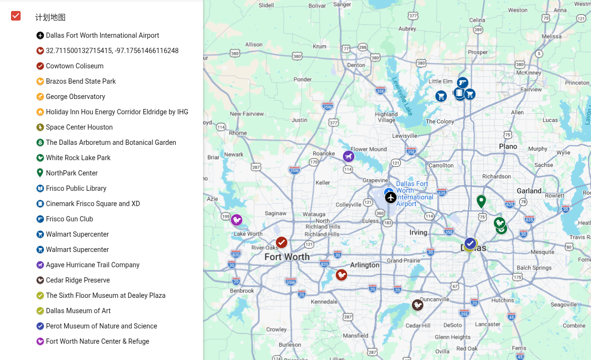

计划与准备 ¶
收到朋友夫妇的邀请，我计划 2025 年五一假期到朋友家去玩. 朋友一家住在美国达拉斯一个叫 Frisco 的地方，在美国德州. 上次和朋友见面还是疫情之前，当时我大学放暑假，他们回到北京，我们一起打了羽毛球. 那时，他们才刚刚结婚，吃晚饭的时候他们给我看了结婚证书，是在美国的一个教堂里登记的. 那天我们吃了三不粘，清朝宫廷名菜，我第一次吃. 这么多年过去，他们已经有了一个 5 岁的孩子，所以这次我还将有机会第一次和一个 5 岁的孩子打交道. 朋友拜托我回国的时候顺便帮他们把孩子带到中国，让他在爷爷奶奶、姥姥姥爷家轮流住些日子. 我欣然应允.
第一次去美国，先办签证. 我在 2024 年 12 月开始着手填 DS-160 表格，直到2025 年 3 月中旬才把美国 B2 旅游签拿到手，中间颇有些波折，还被拒签了一次，连美国总统都换了一茬. 好在居住在北京，去美国使馆面签不太费事，就是费些金钱和精力.
拿到签证后，订了来回的机票，也就确定了整个行程的时间范围，从 5 月 1 日到达美国，到 5 月 11 日离开，一共有 10 天可供我安排. 我安排行程的主力工具是谷歌地图的 My Maps⧉，可以添加图层、可以用任何颜色的任何图标标明地点，把所有有意向去的地点在地图中标注出来后，就可以方便地进行取舍和排期了.

到达 ¶
在将近 20 个小时的飞行后，我降落在了达拉斯沃斯堡国际机场，这是美国中部时间 5 月 1 日周四下午 17:30. 按照计划，朋友正好可以在下班之后赶来机场接我. 过海关、取行李都非常顺利，等我走出机场的时候，朋友还在路上. 我找了个地方呆着，这个时候飞来了一只黑鸟，雄赳赳气昂昂地落在不远处的长椅靠背上. 我不紧不慢地给它拍了张照片，用软件识别了一下，是大尾拟八哥. 好！大尾拟八哥，你就是我在美国见到的第一只鸟了！

我还在捣鼓一个叫 Merlin 的鸟种鉴定软件，下载当地的鸟种资源包，朋友就已经到达了机场. 我上了朋友的车，给她展示我看到的第一种鸟. 朋友说，这种鸟在这里非常常见，路边、电线上，到处都有. 我们一边往家里开，一边叙叙旧，聊些近况，我则第一次认真观察起这个城市、这个国家. 其实它就像我在电影里看到的、像我在游戏里体验到的那样，道路非常空旷，没有高楼，没有繁华的市区，路旁有巨大的广告牌. 美制单位开始占领一切：朋友车里的导航软件用的距离单位是 miles（英里），路上的立交桥标注的高度则是诸如 16 FT（英尺）10 IN（英寸）.

到达朋友家后，我和朋友没有下车，爸爸则领着 5 岁的小朋友出来，我第一次和小朋友见了面. 他很腼腆，向我展示他的宝可梦卡牌收藏，中文英文夹杂着说，但说英文稍微多一点. 我们四个人一起去了一个稍微繁华一点的 plaza 吃了一家伊斯坦布尔餐厅. 小朋友在车上问还有多久到，爸爸回答了他之后他又问“Is that long?” 朋友向我解释，说小朋友还不能够理解数字是多大，时间是多长，不知道五分钟、十分钟、一小时都是多久，所以总是先问多久到，然后再问“Is that long?” 但无论时间是多久，对于小朋友来说，要么是 long，要么是 not long，还真是简单啊.
吃完饭后我们回到家，朋友带我转了一下他们的房子. 房子是典型的美国人的房子，和我在电影里看到的、游戏里玩到的一样. 前门外面有一个门廊，有一片草坪，但是大多数时候都不走前门；车开到房子后面直接停进车库，走后门进入房子. 房子一共有两层，一层有客厅、开放式厨房、洗衣房、两个朋友的两间办公室、他们的卧室、洗手间和衣帽间；二层有孩子的卧室、给我准备的客卧、洗手间、孩子的娱乐房和一个还没有投入使用的房间，他们打算之后做影音房. 当然还有一个后院，美国房子的标配，摆了桌子和两张大沙发，有一大片草坪和烤肉用的烤架.
我们简单确认了一下第二天的行程就各自休息了，第二天是周五，小朋友还要上学，我的朋友还要上班，而我要去参加当地一个观鸟协会组织的观鸟活动.
五一假期开始前的一周，我在北京国际电影节上看了一个电影《巴黎夏日》，电影中的女主角 Blandine 从诺曼底来到巴黎，看奥运会游泳比赛，借住在她同父异母的姐姐家里. 女主 Blandine 是一个笨拙的、有点习惯于讨好别人的角色，电影拍得非常细腻. 我看的时候就想，这会不会也是我在美国之行中借住在朋友家的遭遇. 电影中 Blandine 的姐姐、姐夫还有他们家的孩子都各自有自己的事情要做，姐姐一直忙着处理工作，根本无暇顾及 Blandine. 电影中有一个镜头是姐姐因为工作上的事大发脾气，Blandine 想要安慰姐姐却惹得姐姐更加生气. 电影把那种成年人之间关系的脆弱性和一个人到达异地他乡的孤独刻画得非常到位. 这个电影让我意识到，朋友能够给我提供住宿，能够针对我的行程提供尽可能多的开车接送，这对于我来说已经是莫大的便利，更多的时候我需要自己一个人把我的旅游安排好，我要能够自己一个人处理绝大多数的问题. 朋友一家也都各有各的事情要忙，我希望我的到来能够尽量少地打扰到他们的正常生活. 成年人的世界就是这样的，有了工作、有了事业、有了孩子，再也不是当初上大学的时候，朋友们说好了要玩，就真的可以放下一切，一心一意地陪着你玩. 这终究是我的旅游，是我的假期，我要自己把它过好.
Kelley Park ¶
旅游对我来说应该是去体验当地那些和我的居住地不一样的东西，而当地物种就是一个非常好的切入点. 中国和美国相隔如此遥远，物种在这样两块陆地上的长时间演化必然造就了非常不一样的生态面貌. 所以当我决定来这里旅游，我就把观鸟作为了我旅游中很重要的一个项目，我也在互联网上搜索，看看我的行程之内有没有什么面向普通公众的观鸟活动.
美国有一个非常著名的民间环保组织，也许甚至可以说是观鸟组织，叫做奥杜邦学会（The National Audubon Society），在各个州各个城市都有分会. 我很快就找到了沃斯堡地区一个非常活跃的分会——Fort Worth Audubon Society⧉. 其官网做得非常好，我在里面找到了非常多有用的信息，我还顺藤摸瓜发现了一本书：Wild DFW⧉，看上去是非常好的对达拉斯、沃斯堡地区的自然和野外探索的指南. 我提前在网上下单了这本书并快递送到了朋友家，回中国的时候我还把这本书带了回来.
我在沃斯堡奥杜邦学会官网罗列的众多的活动中仔细搜寻，真的发现了一个非常合适的观鸟活动：First Friday Feathers Field Trip⧉，每个月的第一个周五，在阿灵顿的 Kelley Park. 五月的第一个周五就是 5 月 2 日，正好是我到达美国后的第二天. 刚一来就能够参加到一个当地的观鸟活动，可以和当地人对当地的鸟种进行一些交流，我认为这是一个非常好的安排. 活动也不用报名，直接去就可以了.
观鸟活动的集合时间是 8:30，时间非常合适，小朋友 7:30 要去上学，朋友送完孩子上学后正好可以送我去参加这个活动，然后朋友再去上班，计划多么完美！可惜朋友送我去阿灵顿的路上因为着急开错了两次路，耽误了一些时间；而且路上一直在下雨，也让我很担心活动能不能如期进行. 一边担心一边焦急，我最终到达集合地点的时候，已经迟到了 15 分钟，目之所及看不到任何观鸟的人. 好消息是，雨已经停了，或者是这个地方就一直没有下雨. 以防万一，朋友把伞借给了我.
朋友开车离开，我把伞装进书包，取出望远镜，调好瞳距，做好准备. 这是一个很安静的公园，有很大的草坪，种了很多树，有很多灌木丛，周围是一片居民区. 天气不错，太阳从云层里探出头，不像是下过雨的样子. 我拿出手机看了一下地图，这是一个很小的公园，我计划先沿着公园里的一条主路快点走，说不定能够追赶上其他人. 实际上我并不知道其他人是谁、长什么样，我甚至不知道他们有几个人，是有两三个人，还是有十来个人. 但我想，观鸟人是很好辨认的，肯定是胸前挂着望远镜、走走停停、注意听周围声音的人. 而且我胸前也挂着望远镜，我相信，如果迎面走过，我们一定能够发现彼此.
我沿着主路在公园里走，刚走没多久就遇见一个遛狗的大爷，他一看到我就大声对我打招呼：“Good morning!”我也赶紧向他打了声招呼，然后我们就擦肩而过了. 这是我在美国学到的第一课：人们见面会打招呼. 我后面很多天的经历也都教会我这件事，只要不是在人员很密集的地方（比如超市、学校、景区、餐厅），在社区里、在公园里，任何两个陌生人，走在路上，碰面的时候就会互相问好. 我觉得这是一个很好的氛围，让人感到很友善，尤其是对于我这样一个外国人，感觉心里暖暖的.
就这样走了十分钟左右，跟七八个人打了招呼之后，我发现自己已经走到这个公园的另一边的边界了，再走就离开这个公园了，而我还没有找到那群观鸟的人. 我知道自己路过了几个岔路口，可能是我选错了路吧. 但我突然又想，我何必非要找到那群人呢？更何况我都不能确定这个公园里有没有“那群人”. 我脖子上挂着望远镜，可我光顾着赶路，都还没有拿起过望远镜一次，我是来观鸟的啊，不然我就自己试着看吧！当我放慢了脚步，留意起周围的环境，我才发现这个公园有多美，路边有很多野花，各种颜色的，花瓣上还沾着露珠，很漂亮. 头顶有那么多鸟叫的声音啊，我刚刚都没有注意听. 草坪上、树上，到处都有很多松鼠，当我停下来用望远镜观察起一只松鼠，那只松鼠也突然在树上停住了，打量起我来. 对于松鼠来说，我和本地人有区别吗？它们能看得出我是外国人吗？

很快，我就被树上一种很吵的鸟叫声吸引住了，我站定下来找了好一会儿才看到了那只鸟. 这是一种全身红色的鸟，非常艳丽的红色，在中国我可从来没见过这么鲜艳的鸟！我用望远镜看了好一会儿，最后给它拍了张照片，识别了一下，确认了是主红雀，一个非常宗教的名字，应该是因为这只鸟全身红色，非常霸气，就像是罗马天主教会红衣主教一样吧. 这个名字说不定已经被使用好几百年了.

我还听到了很多种其他的鸟叫声，但是我怎么也没有找到. 就在这时，我远远地看到一群人走过来，我马上就有预感，他们应该就是我正在寻找的参加观鸟活动的人. 我朝他们走去，他们每个人都挂着望远镜. 踏破铁鞋无觅处，蓦然回首，这里就是我的灯火阑珊处！
我和他们一行人打了招呼，活动介绍中写的领队 Chuck Baskin 没有来，由另一个人 Jean 带队. 我简单说明了一下我因为迟到没有找到大家，所以就自己独自看起鸟来，Jean 问我看到了什么鸟，我说我只看到了主红雀，因为我来自中国，今天只是我到美国的第二天，对这边的鸟都很不熟悉. 他们一群人都非常惊讶，马上友好地对我表示欢迎.
就这样，非常简单地，我融入了他们. 这群人不到十个，女士稍多，只有一位男士拿着长焦相机拍鸟，其余人都只拿了望远镜. 除了我以外，全都是中老年人，没有看到和我年龄相仿的年轻人，可能因为活动定在周五，年轻人要去上学或者上班吧. 这些人看上去都是经验丰富的观鸟高手，没有像我这样的入门级选手，每个人都很擅长找鸟，每个人也都非常擅长通过声音认鸟. 在国内参加类似的观鸟活动时，能够通过声音辨认鸟类的人是少数.

领队 Jean 经验非常丰富，准备也非常充分，当我们看到黑头威森莺的时候，她拿出了一页纸，上面是各种各样非常相近的莺，告诉我们任何两种之间微妙的区别在哪里，我们眼前的这一只为什么是这一种. 这让我想到在国内看柳莺，完完全全是一模一样的情形，大多数柳莺不好通过观察区分，只能靠叫声区分，真是天下苦莺类久矣！

大家很轻松地观鸟，讨论看到的鸟，也讨论一些鸟的知识，氛围和国内没什么不同. 他们都很照顾我，看到什么鸟都会给我指，他们会说，“这只鸟在这里很常见，对我们来说没什么特别的，但他（指我）来自中国，对他来说就是很新的鸟.”他们介绍给我一种鸟，叫 Painted Bunting（丽彩鹀），就是一种在本地很常见的鸟，不过它头是蓝的、肚子是红的、翅膀又是绿的，五彩斑斓的，非常漂亮，只是一般都躲得很隐蔽，不太好找.
我发现美国观鸟人在说鸟的名字时，也常常会省略不重要的单词，只说关键，这和中国的习惯一模一样. 比方说 Mississippi Kite（密西西比灰鸢），他们在说的时候就只说 Kite 而省略 Mississippi，因为 Mississippi Kite 就是最常见的 Kite；在说 Black-bellied Whistling Duck（黑腹树鸭）的时候就只说 Black-bellied，因为大家都知道眼前的是 Whistling Duck. 在中国，情况是完全一样的：当我们想说银喉长尾山雀的时候，我们就只说“银喉”两个字；说灰头绿啄木鸟的时候，我们就只说“灰头绿”三个字. 这对于经验丰富的观鸟人来说自然是很方便，但对于我这种对当地鸟种完全不熟悉的、母语还是外语的外国人来说就很是艰难了，我不得不麻烦别人帮我把鸟名完整地说出来或者拼出来. 就这样，我结识了 Donna，一位非常热心的女士，她总是不厌其烦地帮我把鸟的完整名字输入到我的手机上，真的帮了我大忙.

我们一边走一边聊，我也分享了很多我在北京看到的鸟. 当我们看到 Belted Kingfisher（白腹鱼狗）的时候，我分享了北京的普通翠鸟；当看到 American Goldfinch（北美金翅雀）的时候，因为我的观鸟软件能同时显示英文和中文，我马上就联想到了北京的金翅雀，转头把金翅雀分享给了他们. 就在这个时候我发现了一些端倪：北美金翅雀是黄雀属的（Spinus），而金翅雀是金翅雀属的（Chloris）. 而且他们的英文名也不一样，前者是 Goldfinch，后者是 Greenfinch，颜色都变了. 可能美国人不太能够理解我把这两种鸟联系在一起的原因吧. 这也提醒我，博物学要多多关注物种在不同语言下的名字，也别忘了关注拉丁名，只认一种语言的话很可能会被名字所误导，误以为两个物种之间有联系或者没有联系.
走着走着，有人突然指着路旁的一棵树说有 Ruby-throated，我循着那人指的方向看去，果然看到了在树梢上停着几只我从没有见过的鸟，我对它们的第一印象就是喙特别长. 我向大家描述了我对这个鸟的第一印象，大家都表示肯定，并补充说这种鸟能够悬停，翅膀扇得非常快. 我这个时候还没有意识到这种鸟是什么，只好又请 Donna 帮我把名字打全. 等我看到完整名字的的时候我惊呆了，这是 Ruby-throated Hummingbird（红喉北蜂鸟）——我人生中第一次见到了蜂鸟. 虽然早就对蜂鸟有所耳闻，什么世界上最小的鸟，唯一能够倒着飞的鸟，诸如此类，但我一直以为这是热带雨林中才能见到的鸟，没有想到在美国德州竟然就这样轻而易举地见到了. 我又举着望远镜仔仔细细看了它们一会儿，它们很平静地站在树梢上，丝毫不知道我看到它们时的感动.
我对 Donna 说，这是我人生中第一次见到 Hummingbird，因为中国没有 Hummingbird，她感到非常震惊，并把这件事告诉给所有人，似乎是想求证，中国真的没有 Hummingbird 吗？我快速在手机上查了一下，中国真的没有蜂鸟，在亚洲都没有，对我来说，这可真是一个非常珍贵的加新记录.
我想起在北京的时候，我人生中第一次观鸟，在我第一次看到啄木鸟时就有这种突如其来的感动. 于是我开始好奇起来，他们这里有没有啄木鸟呢？Donna 又耐心地向我介绍起了他们这里啄木鸟的情况，最常见的有两种，一种是 Red-bellied（红腹啄木鸟），一种是 Downy（绒啄木鸟）. 我问今天是否会看到，他们说在碰上我之前他们已经看到过了，如果之后看到了再指给我看. 可能是因为我指名道姓问了一种鸟，他们便问我来这里有没有想看的鸟. 我大概是知道的，很多地方都有自己非常独特的鸟种，很多观鸟人不远万里去到一个地方，是有着一个愿望清单的，他们去一个地方就是想要看一个特定的鸟种，所以如果我有什么想看的鸟，他们很乐意提供一些线索. 但我不是那种观鸟人，我还远远没有达到那样的境界，对我来说，常见的鸟都还有大把没有看过的呢，看到任何鸟对我来说都是加新. 更何况我在来之前一点准备都没有做，对这里有什么鸟，我能看到什么鸟一点概念都没有，更别提我想看到什么鸟了.
不过我突然想到白头海雕，我最一开始就知道这种鸟，是美国的国鸟，有着非常有意思的求偶行为. 来之前和朋友聊，朋友还告诉我这种鸟的叫声和长相非常不匹配，以至于影视作品里这种鸟的叫声都是另拿别的鸟的叫声配的. 于是我就问他们知不知道哪里有白头海雕. 他们马上就说出了一个公园，说那个公园里有白头海雕筑巢了，他们一经讨论和搜索，最后给了我准确的公园的名字：John Bunker Sands Wetland Center. 可惜我的行程已经排满了，这次没有机会去找白头海雕.
我说到昨天在城市里见到了非常多的 Grackle，他们就同时唉声叹气起来，说 Grackle 太多了，而且很脏，吃人类的垃圾，他们都不喜欢这种鸟. 然后一位女士问我觉不觉得阿灵顿的卫生很差，街上很脏，我说没有啊，我觉得这里很干净……
我们还讨论了关于猛禽的一些异同，我感觉在中国猛禽都飞得很高，用双筒手持望远镜不太容易辨认，往往需要相机拍到之后放大再确定. 但是在这里，明显觉得猛禽和其他鸟没有什么太多的不同，他们也会飞得很低，也会落在树上，落在电线杆上，我今天拿望远镜就已经看到了各种鸾、隼、鹰了，就觉得美国的猛禽飞得比中国要低很多.
最后不知不觉间，我们就回到了集合地点，有个大叔说，啊这里有啄木鸟，Zero 不是想看啄木鸟吗，大家停下来一听，真的听到了红腹啄木鸟的声音. 于是所有人就开始循声往那棵树走去，大家齐心协力，帮我找啄木鸟. 我们最后成功找到了那只红腹啄木鸟，它非常专心地在树上忙碌着，时不时叫一声，丝毫没有理会我们一群人围过来看它，让我好好看了个够. 就在我们最后决定要走的时候，还有一只绒啄木鸟飞过来一小下，它比红腹啄木鸟要小多了，也比较怕人，很快就飞走了，我看到了，但没能拍下. 我觉得自己真的非常幸运，像是得到了眷顾.

大家又闲聊了几句，他们问我在美国的旅行，我说自己晚上将会去沃斯堡看一场 rodeo（牛仔竞技比赛），他们发出一阵惊呼，说“That is a very Texas thing!”最后我又和 Donna 和 Jean 一起拍了一张合影，观鸟活动就结束了. 在写这篇博客时，我在 eBird 网站上看了一下，当天 Donna 和 Jean 都上传了我们那天看到的鸟种清单，这是领队 Jean 的 eBird 鸟种记录⧉，我们那天在阿灵顿的 Kelley Park 一共看了 40 种鸟，不过我没有看到那么多，我大概看到了 15 种左右.

UTA ¶
我正在考虑接下来的行程，想着要不要去 UTA（The University of Texas at Arlington，德州大学阿灵顿分校）转一转. 毕竟现在时间还早，离晚上的 rodeo 还有好几个小时. 这个时候一辆车停在我旁边，车窗摇下，Donna 问我接下来要去哪里. 我说我打算去 UTA 转转，她说她可以送我去. 于是我就上了 Donna 的车.
Donna 是一个头发已经有点花白、脸上已经出现很多皱纹的奶奶了，她开车很快，很爱笑，很可爱. 她向我抱怨说她自己的车很老很老了，已经十多年了，有时候路上的红绿灯滴滴地响，她还以为是她自己的车发出了什么异响. 说着她还双手往前一伸，然后耸耸肩，做出很无奈的样子. 她说她的车的空调不好用了，要开很久才能让温度降下来，问我热不热. 我说一点都不热，现在这个季节开着车窗就非常舒适. 我说听我住在这里的朋友说，等到了七八月份，德州的气温都能有四十多度. Donna 表示非常同意，她把车窗开到最大，风从车窗灌到车里，我觉得很惬意.
Donna 开车不需要看导航，她的车没有那种车载的屏幕可以提供导航功能，她自己也不会拿出手机来导航，我看她的车里都没有可以放手机的支架. 我想她一定生活在这附近，对这附近的道路都非常熟悉. 要是她开车去稍微远一点的地方，我甚至能想象出一副她拿着一张超大的纸质的地图的画面，她可能会把地图随意地折一折，一边开车一边用铅笔往地图上做标记，中午找个商店买个热狗，一只手把着方向盘，另一手吃.
Donna 对我的美国之行很感兴趣，我简单说了说我的计划，还告诉她这是我第一次来美国. 她觉得我很勇敢，第一次来美国就自己一个人来，还是来德州，去哪还都一个人去，还会来参加当地的观鸟活动. 我则觉得这没什么大不了的，无论遇到什么都是我宝贵的经历，而且我相信不管遇到什么困难最后肯定都能够顺利解决的. 然后我们又聊起中国的鸟，聊起我在中国的观鸟经历，Donna 突然问我，如果她想看 crane，我推荐她去哪个城市. 可惜了我可怜的英语词汇量，我竟一时想不起 crane 是什么意思，我只好让 Donna 帮我拼一下，然后我一查才知道，原来是鹤……
书到用时方恨少啊，我确实对鹤的了解不是很多. 我只好承认自己到现在也还没有看到过鹤，虽然没法马上推荐一个城市给她，但我先把北京给排除了. 我说如果你想看鹤的话，别来北京，北京是没有鹤的……具体哪个城市的话，我马上查了一下，我说北边有，南边也有，北边可以去东北，南边的话很推荐云南，云南各种鸟都很多. 我问她有没有去过中国，她说她没有去过；我问她有计划去中国看鸟吗，她说近期应该不会，特朗普弄的关税啥的，说完又是一摊手，耸耸肩，我们相视而笑.
谈笑间我们就到了 UTA，Donna 热情地给我做着介绍，这里是宿舍楼，这里有一家非常著名的书店. 她问我有没有什么特别想去的地方，我说还真没有，我就想随便转转，我问她有没有什么推荐. 她说，图书馆？我说，好，就去图书馆吧. Donna 虽然没有导航，但她似乎脑子里有导航，尽管她嘴上说着不太确定，但还是一点冤枉路都没开就顺利把我送到了图书馆附近. 我问她，你怎么对这一片这么熟悉，是一直住在这里吗？她说，她曾经在 UTA 上学，后来搬走到别的地方生活去了，最近几年才又搬回到这里.
我好好地感谢了 Donna 能够送我来这里，也感谢她在今天的观鸟活动中对我的各种帮助，包括不厌其烦地帮我拼写鸟的名字. 她则表示非常高兴能帮上忙，和我聊天很有意思，然后祝我在美国的旅行愉快. 就这样，我下了车，和 Donna 道了别，她告诉我饿了的话可以往前走，前面有吃的. 我很想继续和她聊天，我甚至想能不能邀请她和我一起吃个饭. 但我又觉得，还是算了吧，别总是麻烦人家了，人家也有自己的事情要做吧. 于是我再次感谢了她，挥了挥手. 她说别客气，然后开着她的小汽车就走了.
我在 UTA 随便走了走，看到一个科学楼我还进去走了一圈. 他们楼里的环境就和我在游戏 Life is Strange 里玩到的几乎一模一样，低矮的天花板，很宽的楼道，墙上有各种张贴的海报和宣传，两旁都有房间. 我转了一层，又上到二层转了一圈，有上自习的地方，还有两间化学实验室，里面堆着仪器和各种瓶瓶罐罐，很有氛围. 我还去了他们的洗手间，洗手间的镜子上贴着 Do You Need Help 的宣传贴纸，无论是骚扰、性侵、药物滥用、霸凌、跟踪等等，上面写着可以打的电话或可以联系的邮箱，他们有专门的 RVSP（Relationship Violence & Sexual Assault Prevention）项目可以提供支持和帮助. 感觉很不错，而且张贴的位置（洗手间的镜子上）也选择得很好，是一个相对私人且安全的公共场所.

从科学楼里出来，我就去了 UTA 的图书馆，我看其他人都是进门刷学生卡才能过闸机，我就问前台值班的学生，我是游客，没有学生卡能不能进去看看. 她管我要了证件，她登记了一下我的名字就帮我刷卡进去了，还说等我走的时候也叫她一声，她帮我刷卡. 图书馆一共有六层，还有一个地下室，每一层都不算大，是一个小小的图书馆. 自习的区域做得很好，自习的位置也很多，而且不少是那种非常注重隐私的三面封闭的高沙发. 图书馆里没有固定书架，所有的书都在移动书架上，也就是地上有轨道的那种. 好几排的书架都挤在一起，偶尔有个缝隙可以穿行，如果想要找书，是需要在书架侧面自己转动把手移动书架的.

图书分类是一套我没有见过的体系，叫做美国国会图书馆分类法（LCC，Library of Congress Classification）. 在这套分类法中，先用 A-Z 分出一个大概的领域（这有一点像中图分类法），然后在每个领域下面再继续用第二个字母和第三个字母分小类. 比如说 Q 表示的是 Science 类，下面就有 QA 表示 Mathematics，QB 表示 Astronomy，QC 表示 Physics，QD 表示 Chemistry.

我转任何图书馆，都是要找一找数学类书籍的，因为我对数学类书籍比较熟悉，可以从中看出图书馆的藏书水平. 我在里面一通找啊，找了五楼找四楼，角角落落都转遍了，最后终于找到了 QA 数学类书籍. 你猜怎么着，整个图书馆，QA 的数学类书，一共就只有两本！一本是控制理论，另一本是弹性力学……实话说我是觉得有一点奇怪的，因为竟然没有更基础更纯数的数学，什么分析啊代数啊竟然通通没看见！只能怀疑是不是还有别的更加专门的图书馆，比如如果有数学楼的话，可能里面会有院系自己的单独的图书馆吧.

从 UTA 图书馆出来，就开始下起了小雨，我刚走没几步，突然电闪雷鸣，小雨很快就变成了大雨，我赶紧跑到图书馆旁边一个楼的通道下面站着避雨，顺便搜了搜附近有什么吃中午饭的地方. 幸好朋友把伞借给了我，等我找到了中意的餐馆，雨也稍微小了一点了，我赶紧打上雨伞去吃饭. 点餐是我最发怵的事情，因为我看不懂菜单. 但这样一来反而解决了我难以做出选择的问题，随便点就行了. 我随便点了一个，上了一大碗各种乱七八糟的东西拌在一起. 量太大以至于我只吃了一半，剩了一半.
Stockyards ¶
吃完饭，雨还没有停，我打了个 Lyft，从餐馆打到最近的一个公交站. 我打算体验一下这里的公共交通. 沃斯堡的公共交通看上去还算是相当发达的. 过了一会儿，我打的车到了，司机是一个印度人，他全程用耳机在和别人用我听不懂的语言聊天，他的导航软件也用我听不懂的语言播报走法，只有路的名字是用英语念出来的.
大概二十分钟左右，我就到了公交车站，公交车站有一个小棚子，可以简单避一下雨. 车站里坐着一个黑人，感觉像是流浪汉，见到我先和我说了一大通，黑人口音太重我也听不太懂，问我有没有烟，我说没有，他说我很健康. 后来我就没有理他，他还坐在那里自言自语，还时不时会哈哈大笑，感觉精神不太正常. 过了一会儿，另一位黑人女性也来等车，流浪汉也和这个黑人女性说话，但这个黑人女性就完全没有搭理他，应该也是见怪不怪了.
过了一小会儿，我要乘坐的公交车 89 路来了，这里是始发站，我给司机出示了我的 3 hours pass 就上去找地方坐下了，这是我提前在 GoPass 软件上购买的. 司机是一位年轻的黑人女性. 公交车在这里一直等，等了十多分钟才发车，我不知道是什么情况. 车辆开动后就沿着既定路线行驶，到站前会有语音播报，而且只报站名本名，什么多余的话也没有，一个多余的字也不说. 站名也是言简意赅，都是两个路名中间夹一个“&”，比如“Lancaster & Malcolm”，就表示我们在走的这一条 Lancaster Ave 和横着的一条 Malcolm St 这两条路的交叉口. 公交车通过车站时司机也不停车，径直就往前开. 有几站有乘客在下面等，要上车，司机才停车让他们上来. 根据我长时间的观察，我才搞明白下车的方法：沿着车窗，有一条横着的长长的黄色的绳子，如果想要下车，需要在到站前拽一下这根绳子，这根绳子连到司机那里，你拽了绳子，司机就会知道有人要下车.

坐公交车的人还是挺多的，但几乎全是黑人，除了我是外国人以外，只有一个年长的白人男性上车. 给我的感觉就是，公交车的主要服务对象就是在这里的黑人，公交车的运行线路也主要是穿过了黑人的居住区. 可能这里的白人和亚洲人都自己有车，没有公共交通的需求. 黑人上车后就是很沉默，找地方坐下或者找地方站着，那个白人男性上车后就和他周围的所有人都打了招呼. 最后在一个有点类似于交通枢纽的站点我下了车，准备按照地图的提示，换乘 orange line. 这个时候这里还在淅淅沥沥下着小雨. 这一趟 orange line 公交车也是等了没五分钟就来了. 很顺利地，我就到达了沃斯堡的 Stockyards. 我下车的时候，雨过天晴.

时间还有点太早，我先看了一下我要看 rodeo 的地方，然后随便往别处走一走，转一转. 我在地图上看到了一个很小的小公园，就去往那边. Stockyards 像是一个比较荒芜的工业区，除了那一条遍布游客的道路以外，其余地方都看上去很荒凉. 公园里有一条小步道叫 Trinity，我在那里看到了大白鹭和大蓝鹭. 大白鹭在北京也非常常见，而且我知道北京有大白鹭、中白鹭、小白鹭三种. 大蓝鹭我倒是第一次见，但感觉就是染了毛的大白鹭. 我还特意查了一下“蓝鹭”有没有大中小之分，发现只有大蓝鹭和小蓝鹭，没有“中蓝鹭”，倒是有一个蓝灰鹭，可惜是白鹭属的. 让我来总结一下：
- 大白鹭（Great Egret）：鹈形目、鹭科、鹭属
- 中白鹭（Medium Egret）：鹈形目、鹭科、鹭属
- （小）白鹭（Little Egret）：鹈形目、鹭科、白鹭属
- 大蓝鹭（Great Blue Heron）：鹈形目、鹭科、鹭属
- 小蓝鹭（Little Blue Heron）：鹈形目、鹭科、白鹭属
- 蓝灰鹭（Slaty Egret）：鹈形目、鹭科、白鹭属

这个公园小小的，但是景色还可以，本来想转一圈从别的地方回去的，但有一个地方实在是积水非常严重，无法通过，我只好折返回去. 回去的路上，看到了西王霸鹟. 鸟如其名，这种小鸟非常霸气，胆量非常大，最为著名的特征就是无所畏惧，会为了保护领域和鸟巢而向任何入侵者发动猛烈的进攻. 王霸鹟飞行非常灵活敏捷，会从上方或后方攻击任何经过的猛禽，并且它们的拿手好戏就是从猛禽的上方啄击猛禽的后脑勺.

往回走到 Stockyards 主干道上，正好下午的长角牛游行活动刚刚开始. 我就在路边找个地方看. 这个地方明显是一个旅游景点，来自全世界各地的人都有，主持人和大家互动问大家都来自哪里，现场就听到了澳大利亚、比利时和意大利. 长角牛游行活动结束后，我随便走走，在可以骑在长角牛背上拍照的地方，听到了两个人在用中文交谈. 在街边 Stockyards 的牌子下面有一对情侣请我帮他们拍照.

这条街上有一个小小的博物馆，我还进去参观了一下，讲述了 Stockyards 这个小地方的一些历史，还有一些有趣的物件. 这个地方是沃斯堡的牲畜交易市场，1887 年获得特许经营权后一直活跃到了 1986 年，在 99 年的历史中为美国提供了肉类食物. 后来，肉类加工厂关闭，各个地方也开始发展起了自己的牲畜零售业，这个地方就慢慢成为历史了. 比较有意思的一个藏品是沃斯堡警察局的警徽，展品介绍说 1969 年美国搞载人登月时，阿波罗 12 号任务的宇航员 Alan Bean 就来自沃斯堡，这里的人们以他为骄傲，为他授予了荣誉警官的称号，并给他颁发了一枚警徽. 当 Alan Bean 飞上月球的时候，沃斯堡警察局的警徽就在他的飞行服里. 于是，沃斯堡警察局就成为了唯一一个警徽曾出现在月球上的警察局. 给人的感觉就是：我们警察局真厉害，在月球出过警……
参观完博物馆，离 rodeo 还有很久，我在博物馆前面的走廊上面找了个椅子坐下读了读我的新书 Wild DFW，看到了上午他们向我介绍的各种啄木鸟，还有蜂鸟. 很后悔昨天晚上没有提前预习一下，那样的话在上午的观鸟过程中应该能够更顺利地听懂更多东西，也有更多的东西可以和他们交流. 不过我想这也没有什么关系，提前知道的东西多，就有更加深入的东西可供交流；提前知道的东西少，也是一种体验，在浅层次上交流也是一种交流，谁都有第一次嘛.
时间差不多了，我先去吃饭. 本来有点想去麦当劳的，但算算时间可能有一点赶，于是就在附近找了一家汉堡店进去吃了汉堡. 我坐在吧台. 看着后面的厨房出餐，一群服务生在前面聊天、打打闹闹. 他们一看就是非常年轻的学生，出来兼职打工，青春而快乐. 这一餐依然是分量太大了，我完全吃不了，剩了好多. 给我的一杯汽水我好不容易喝完了，服务员又想再给我续一杯，我赶紧阻止了他. 吃完之后想擦擦手，不知道他们那个卫生纸怎么说，就跟服务生说想要那个，让他帮我递过来，递过来的时候顺便问了一下，这个东西叫什么，于是学到了：paper towel.
结账之后离开，去看 rodeo. 教宗方济各（Franciscus）刚刚在不久前（2025 年 4 月 21 日）去世，所以比赛开始前有一个全体起立默哀的环节. 牛仔竞技比赛一共有两个项目，一是在马背或牛背上保持不被摔下（无鞍野马和蛮牛，它们的身体上被提前勒上一条带子，不断刺激它们让它们感到不适和愤怒，所以放出来以后就会一直跳动，想把骑在它们背上的人甩下去），坚持到 8 秒就算通过，坚持的时间越长越好. 二是把小牛犊放出来，人手拿绳索骑着马在后面追，看准时机扔出绳索把小牛犊绊倒，然后翻身下马去把小牛犊给捆个四脚朝天，用时越短越好. 参加竞技比赛的还有几个女牛仔，她们好帅好喜欢，可惜所有的女牛仔都没有能够成功用绳索套到牛犊.

这其实就像是一个 NBA 之类的体育比赛，比赛的间隙有一些观众间的互动，镜头有时候会扫到观众，观众就可以起来做一些姿势什么的，有的观众会站起来跳舞. 镜头还真的扫到我一次，我就把手伸过头顶鼓了鼓掌（觉得自己好傻）. 后面还有镜头给到情侣让他们接吻，以及镜头给到强壮的人让他们秀肌肉，现场气氛相当不错. 还有一种游戏，是播放流行歌曲中高潮的某一句，然后音量突然减小，在场的观众们就都开始一起接着往下唱. 在这个环节我意识到自己与英语文化圈的割裂，整场所有的歌曲里我只有一首 What’s Up 是我听过的、会唱的，可以跟着唱两句，其余的所有歌我连听都没有听过. 坐在我右边的几个一起来的观众就明显对这些流行歌曲都非常熟悉，每一首都能跟着唱. 而坐在我左边的观众就像我一样，似乎是都不会唱. 我左边的观众也是自己一个人来的，也是那种游客的感觉，反应很平淡，像我一样. 我想，是不是那些和朋友或家人一起来的观众才会表现得比较放松，人们在自己熟悉的人身边可以很安全地释放自己的激情；而我们这种一个人来的，则很难在一群陌生人当中放的很开. 又或者，其实这是因为我不熟悉这里的文化吗？
演出结束后，朋友来接我. 我坐上朋友的车，和她分享了我第一天的经历. 第二天，我们要去休斯顿.
Brazos Bend State Park ¶
第二天 5 月 3 日是周六，朋友一家带上我，一起开车去休斯顿. 从达拉斯到休斯顿有 300 多英里，换算一下将近 500 公里. 美国的公路比较空旷，大家开车都很快，朋友开车最快达到了 100 英里每小时，相当于国内机动车仪表盘上的 160 公里每小时. 美国没有像中国一样的高速公路，至少我没有见到过收费站. 但有一些路看上去还是像高速公路一样，比如那种连接两个大城市之间的路，路上没有岔路口，没有红绿灯，周围是一片荒野，没有什么人类的建筑.
美国在路牌上对路名的标注也和中国很不一样. 比如你在一个十字路口等红灯，你准备直行走的这一条路叫做 X 路，而横在你面前的正在绿灯通行的路叫做 Y 路. 你所注视的路口前方的红绿灯上一般会有一个牌子，标着路名，在中国，这个牌子上会写着 X，告诉你你现在正在走的这条路是 X 路；而在美国，这个牌子上则会写着 Y,告诉你横在你面前的这条路是 Y 路.

一开始我也没有发现这件事，只是自动把北京的经验套用在美国的公路上，走着走着我就发现不对劲了：怎么我们走的这条路名字总是换呢？而横着的路都是叫同一个名字. 我把我的发现告诉给我的朋友，他们竟然都不记得在中国是怎么标记路名的了，还觉得美国这种标记法很合理. 他们一定是太习惯美国的生活了.
路程很长，我们两次在服务区停车休息，给车充电，顺便到便利店买东西吃. 我们经停的服务区叫做 Buc-ee’s，朋友介绍说是德州非常著名的连锁加油站和便利店品牌，徽标是非常可爱的海狸鼠，很多人都会把这里当作旅游景点. 我进去之后果然发现这里游人络绎不绝、熙熙攘攘，这简直是我在美国见到的人最多的地方了. 人们三五成群，大大小小，大多都是全家一起出行，是那种典型的一家人周末一起到远一点的地方自驾游的场景. 便利店里面的商品也是琳琅满目，应有尽有，朋友推荐了他们特色的三明治. 虽然名字是叫三明治，但其实就是一个超大的汉堡. 有好几种口味，买的人还挺多，里面的人一直在制作，源源不断有刚刚做好的热乎的汉堡送出来. 我第一次先是选择了 chopped brisket 口味的，第二天回程的时候则选择了一个 carolina pulled pork 口味的. 三明治甜甜的，很好吃，我非常喜欢.

我们在休斯顿的第一站是 Brazos Bend State Park（州立公园），在这里还有一个 George Observatory（天文台），我很久之前做攻略的时候看到了这个天文台有每周六的观星活动（Saturday Stargazing⧉），所以提前抢了这个周六 22:00 场的观星活动的票. 但很可惜票只抢到了一张，所以计划是朋友送我到州立公园，大家一起转一转公园，然后朋友一家出去找地方吃饭并直接入住酒店，我则继续在公园里游览，直到 22:00 去参加观星活动. 观星活动结束后，我再打车回酒店. 由于我不和朋友一起去吃晚饭，所以朋友在休斯顿特意经停了一家麦当劳，我买了套餐带走，作为我在公园里的晚餐.
按照导航一路开，眼见风景从休斯顿的工业化城市变到了郊区，路两边都是一望无际的农田，再往前又出现了林地. 路上的车也变得稀少，州立公园就坐落在这样一个很偏僻的地方. 到了公园的入口处，朋友买了票，工作人员给了我们一张地图.

朋友询问这里是否容易打到车，工作人员说很不好打，朋友便决定晚上再来接我一次. 到达停车场停好车后，我们选了一条轻松简单的小路，绕着北面半个 Creekfield Lake 走了一圈（上面地图中的红色轨迹），路上看到了很多小花，朋友的孩子抓了很多小虫子，我看到了黑腹树鸭和美洲白鹮，还听到了丽彩鹀的叫声，但是没有找到. 这个州立公园比较出名的是短吻鳄（alligator），朋友在路上还问了一个随机的路人，问前方有没有看到短吻鳄，路人说看到了，就在前面的草丛里在晒太阳. 可我们一路仔细留心地找过去，这一圈转完也没有看到短吻鳄的身影. 回到停车场，朋友一家按计划开车离开了州立公园，我则继续留在公园里，打算探索另外的路线，希望能多看一些鸟，也希望能看到短吻鳄.

朋友走后，我先去天文台附近踩了点，确保晚上的活动我能顺利找到位置，然后我把南边剩下的一半 Creekfield Lake 绕完了，这是中间的核心区域里很短的一段步道. 然后我沿着大路走大约 200 米回到停车场，向左后方往下走，就来到了 Pilant Slough 步道（上面地图中的橙色轨迹），这是一段非常安静舒适的完全独处的时光，整个步道上没有看到任何一个人，只有我自己，听着各种鸟叫. 当然一直在叫最吵的小鸟就是颜色鲜艳的主红雀了，我昨天在 Kelley Park 第一次见到它，今天就看得更加清晰了. 它们站在树枝的最高点，像一只只可爱的火龙果.

走到步道的分叉口，我沿着 Pilant Slough 向右拐，很快就走到了 Elm Lake 的南岸，湖岸边的这一条路上就有了些游客. 头顶没有了遮天蔽日的大树，视野一下子开阔起来.
我向左转迎着夕阳往西走，湖边的路稍微宽了一些，两边的树低了一些，却不显得稀疏，阳光洒在树梢间，一些都很宁静. 我想到了包法利夫人，在她嫁给夏尔医生，刚刚对她的婚姻感到厌烦时，她常常一个人去散步，为了远离她一成不变的生活. 她带着别人送给她的小狗，走在林荫道上，远处是田野，有黄蝴蝶，有罂粟花，夕阳洒在路两旁的树上，而树干排成笔直的直线. 这段描写一直在我心中留下某些痕迹，我一直都是在用想象力去构建包法利夫人散步的这个场景，直到我在 Elm 湖畔的这一刻，我觉得我对这个场景的想象有了依托. 就好像在这里我也成为了包法利夫人，我也逃离了我一成不变的生活.

这毕竟也是一条林荫路，路两旁的湿地又何尝不是田野. 白色的花星星点点洒落其间，美洲白鹮在水中伫立. 黄冠夜鹭和小蓝鹭停落在树梢上，美洲黑水鸡忙着渡来渡去. 一只棉尾兔好像被我打扰到了，从树下的草丛中冲了出来，往前逃了几步后又直起身子回过头来观察我. 我也举起望远镜观察它，它的薄耳朵透过金色的阳光，粉粉嫩嫩的. 晚上 20:00，太阳终于落下了地平线，今天是阴历初六，所以上弦月已经悬在了天空. 成群的鸟从南往北飞，只能看到剪影. 美洲白鹮倒是在夜幕下仍然比较好认，它们总是孤独地单只飞过，只有月亮可以与它们作伴.

这个时候我已经走过了 Elm Lake，也在木栈道上穿过了 Pilant Lake，在一个两层楼高的 Observation Tower 下面，我偶遇了一大群印度人，他们像是一个很大的大家庭，或者是两三个小家庭在一起结伴游玩. 他们中的一个人走过来找我帮忙，想让我帮忙给他们拍一张合影. 我帮他们拍了很多张. 把手机递还回去时，那个人先是对我说了一句“Thank you”，我笑了笑没有回答，他又对我说“阿里嘎多”. 我心想，这是怎么回事，这是把我当作日本人了吗，我说了句“No problem”同时心想要不要解释我其实是中国人，那个人又开始对我说“阿里嘎多”，还用手指我的身后. 见我仍然一脸不解，他把手弯成爪子的形状收到脸的旁边，然后做出可怕的要吃人的表情，然后再指我的身后，说“阿里嘎多”，这个时候我才恍然大悟，他要说的其实是“alligator”，他们刚刚看到了短吻鳄，想要指给我看.
我赶紧让他给我指了一下，果然在水中看到了短吻鳄露出的小眼睛和一点点嘴巴，如果没有这群印度人的帮助，就水面上的这么一丁点小凸起，我绝对不会注意到，哪怕注意到了我也不会觉得是短吻鳄，更不会细看. 我向他道谢. 这是我在这个州立公园，在美国，唯一一次看到短吻鳄，他们印度味的英语口音差点让我与这个机会失之交臂.

George Observatory ¶
与印度人分别后，我继续往前，走到了 40 Acre Lake 步道，我沿着 40 Acre Lake 的北岸继续向东走，向后向南拐，这个时候天已经完全黑了下来，看不见鸟了. 再往远处是一个很大的停车场，有两辆汽车已经发动，亮着车灯，随时准备开走，妈妈们在招呼仍然贪恋玩耍的孩子赶紧上车. 当我走到停车场时，车已经开走了，停车场完全空了，不远处的游乐场也一个人都没有，在黑暗中我隐约看见一个巨大的滑梯的轮廓. 这个时候，我忽然看到了萤火虫. 我发觉到气温有点凉了，赶紧拿出我的冲锋衣穿上，又喝了两口水. 沿着这条步道又走了大约半个小时，我才回到了公园的主路上.
现在是晚上 20:40，夜幕完全降临，公园里没有什么能玩的了，而且也是时候出发去天文台准备参加观星活动了. 我打开手机地图确认了一下方向和路线，但距离着实让我吃了一惊——我距离天文台竟然有 2 英里，也就是 3.2 公里，地图显示我要走 45 分钟. 时间倒是仍然充裕，我就这样不紧不慢地上路了，沿着一条主路，也没有走岔的可能，我就这样往前走，时不时抬头看一看这浩瀚的夜空. 这里确实是一个非常偏僻的州立公园，除了偶尔经过的汽车，整条路上一点人造的光都没有，只有月亮洒下一些白光，让我不至于连路都看不到.
走了大概十分钟左右，我突然看到天空中有一列很整齐的亮点在穿越夜空，速度很快，我还没有来得及掏出手机拍个照片或视频，它们就已经过去了. 我一开始不知道它们是什么，然后我马上就知道了，它们应该是马斯克的星链！我还马上掏出手机打开 WiFi，想看看能不能搜到星链的无线网连上. 写这篇游记时我仔细了解了星链相关的知识，知道了我在当时犯了两个错误：第一，星链不是直接通过 WiFi 就能够使用的，需要购买专门的路由器用来接收星链的信号；第二，在天空中提供网络服务的星链卫星是散布在空中各处的，不会像这样紧紧排成一排，而且亮度不会这么高，速度不会这么快. 我当时看到的这种排成一列的一长串卫星快速过境，其实是星链卫星的发射过程，也叫“星链卫星列车”⧉. SpaceX 的星链发射任务都是按组编排的，一次发射十几到几十颗卫星，它们被大约 80 毫牛的推进器推进，缓慢上升. 最开始它们会以几乎相同的高度和速度运行，所以在地面上看就像是一长串列车一样，多绕地球几圈之后，慢慢地它们之间的距离就会拉大，各自进入不同的轨道. 我的目击发生在美国中部时间 2025 年 5 月 3 日晚上 20:52 左右，我怀疑我当时目击到的是任务 Group 6-75 (Launch 258, 2025-091)⧉，但也不是非常确定，如果有错误，欢迎读者指正.
对星链卫星列车的目击，按理说也并不新鲜，看星链的发射任务列表⧉，几乎每个星期就有一次甚至多次发射任务. 我在写这篇游记的时候查了查，不少人在国内就有过目击，甚至网上有很多拍得很好很清晰的视频. 但这我来说确实是非常稀奇的经历，这是我第一次目击星链卫星列车.
我正陶醉在对星链的目击体验当中，从身后缓缓开过来一辆皮卡. 车窗摇下，司机向我做自我介绍说他是这个公园的 night officer，问我去哪里，需不需要帮助. 我简单说明了我的情况，说我要去前面的天文台参加观星的活动，还说我很好，我很享受自己一个人走路. 他却提议说要载我一程，说这条路很长，而且这么黑，不太安全. 我看他穿着制服，皮卡上也印着这个州立公园的标志，心想这都是旅途中不可多得的体验，就拉开了副驾驶室的门. 他的副驾驶座位上放着一个文件夹，还有一支笔，想必是他巡逻途中的工作笔记. 他把他的东西收好放在车窗下，让我坐上来，然后我们就开着车，沿着这条主路，慢慢地往前开.
他先做了自我介绍，然后我做了自我介绍，告诉他我的名字，我来自哪里，我来这边是旅游，等等. 我给他描述我刚刚看到的一串星星，并告诉他我的猜测，我以为他能证实我的猜测，谁知他表示不知道 Starlink 是什么. 我提到埃隆·马斯克的名字，他说他知道马斯克是谁，但不知道 Starlink 是怎么回事. 说起我要参加的天文台观星活动，他感慨说这里的夜空已经不如之前黑了. 我问他说的之前是多久之前，是大概五年前吗，还是十年前，他说是二十年前……他给我介绍休斯顿的城市发展，哪里哪里建起了高楼，哪里哪里建设成了居民区，完全不在意我对休斯顿这个城市的地理一无所知. 虽然这个州立公园已经是很偏僻的地方了，他说，但你一会儿观星的时候往东看，还是会看到一点城市的光污染——而现在你已经到了这个路口，我把你放下，你从这个小路一直走，就能到达天文台了，我要去继续巡逻了，祝你玩得愉快！
我感谢他送了我这样一程，然后下车与他告别. 我找到一个亮着灯的小小的休息区，坐下休息，顺便吃了我的麦当劳. 时间差不多了，我便往天文台的方向走. 通往天文台的小路先是亮着白灯，然后白灯突然没了，变成了红灯. 顺着红灯一直走，天文台笼罩在一片红光之下.

天文台在一个博物馆里，进去之后先在前台签到，拿到一个手环，并简单了解了今晚的活动流程：一会儿我们会先在一楼的教室里听一个讲座，然后大家一起上到楼顶去体验观星. 在等待讲座开始的这段时间里，一楼的大厅有一些天文相关的科普展牌和展品，可以自由参观. 包括望远镜的原理、LRO（Lunar Reconnaissance Orbiter，月球侦测轨道飞行器）、关于月球的小科普、Canyon Diablo 陨石的样品、一些天文望远镜的展示等等，没有一个固定的主题. 在这里就已经可以领到很多 NASA 的宣传单页了，可见 NASA 对这个小小的博物馆提供了不少的支持.
很快讲座就开始了，讲座的主题是 Europa Clipper（木卫二快船）. 讲座者自我介绍名叫 Leonard，是 NASA 的一个叫做“Solar System Ambassadors（太阳系大使）”⧉的志愿项目的成员，他在这个天文台已经做了 27 年的志愿者了. 我回来之后查了一下这个“太阳系大使”，感觉真的是非常有美国“社区”特色的一个志愿项目，相当不错，不得不感叹 NASA 在科普和公众教育方面的巨大投入. 中国的航空航天集团都是国家企业，在科普和公众教育这种事情上就不够上心.

Leonard 先介绍了 NASA 的十年计划项目书，他们每十年就有一本十年计划，里面会列出 NASA 在这十年里大大小小的目标.
- Vision and Voyages for Planetary Science in the Decade 2013-2022⧉
- Origins, Worlds, and Life: A Decadal Strategy for Planetary Science and Astrobiology 2023-2032⧉
最近的这个十年计划一共有七百多页，关注的主要是生命与起源. 这样就引出了这次讲座的主角：木卫二. 木卫二是一颗非常有可能有生命的星球，因为它上面有水、有能量、有化学变化、也经历了漫长的稳定时间. Leonard 逐一讲解了这些条件都是如何发现的，然后讲座就到了第二部分，讲解 Clipper（快船）探测器. Clipper 于 2024 年发射，现在正在途中，预计于 2030 年到达木星. 由于木卫二表面有很强的磁场，会严重影响探测器携带的科学设备的使用寿命，所以 Clipper 并不是计划要进入木卫二轨道的，而是待在木星的轨道，仅仅在掠过木卫二的时候进行探测. 它会在木星轨道待 3 年半，通过一次一次的飞掠就可以把木卫二的表面都给覆盖到了. Leonard 还为我们一一讲解了 Clipper 所携带的每一种科学探测设备，给我们展示了 Clipper 的样子（超级巨大）、发射它的火箭猎鹰九号、还用一个动画演示了它的轨道转移. 最后又介绍了一些文化上的东西，比如 NASA 非常著名的征集大家的名字给一起带上去，还有一块板子写着各种语言的“水”之类的.
这个讲座的质量之高是超过我的预期的，我本来以为会是更加简单、更加散装、更加通俗、更加没有明确主题的普通天文知识讲座，没想到它是如此主题明确、细节丰富、引人入胜. 在场的观众无论是大人还是孩子都听得津津有味. 讲座中提到了 Clipper 会对木卫二进行采样，这让我有些不太理解——Clipper 不是只在木星轨道，不会进入木卫二轨道吗？那它最后是怎么降落到木卫二上的呢？采样之后样品会返回地球吗？还是当场就分析样品，仅仅把结果发回地球呢？讲座结束后我找 Leonard 单独请教了一下. 原来，这里说的“采样”，并不是我以为的要降落到木卫二的地表，对地表的固体进行采样；而仅仅是在飞掠木卫二的时候，把高度下降到足够低，然后一边飞一边对木卫二的气体表面进行采样. 采样后当场就会分析，只把结果发回地球.
接下来就是激动人心的观星活动了，工作人员带领我们上到楼顶，这里已经摆了一圈各种各样的小型家用天文望远镜了. 首先有一个小哥拿着一个指星笔，照着天空给我们介绍了一圈简单的星空小知识，包括火星的颜色啦、一些星座的故事啦等等. 然后我们进到 Research Dome（穹顶）里面，这也是我此行最期待的部分. 我们登上几步台阶，站在一个平台上，在我们面前就是那台巨大的望远镜. 穹顶的顶部开了一个缺口，望远镜就从那个缺口向外看向宇宙. 大家围成一圈，关上门，里面瞬间黑暗下来.

工作人员向我们介绍了我们的观测对象——M3 星团（M3 Cluster），这是一个球状星团，里面有数十万颗恒星，距离我们 3.6 万光年. 我们这次会通过两个望远镜来观察它，一个就是我们面前的 36 英寸（91.44 厘米）望远镜（Gueymard Research Telescope），另一个则是小穹顶里的 11 英寸（27.94 厘米）望远镜. 介绍完毕，工作人员就操作了一下升降台，让我们依次去望远镜的下方，肉眼使用望远镜目镜观察，并提醒我们注意整个星团的下方和上方，下方有一个很明亮的星星，而在上方则有一个模糊的星星.
直接用肉眼通过望远镜的目镜去看一个星团，这感觉是相当奇妙的，它们在视野里小小的，可是又是真实的. 那么多凌乱的小点点挤在一起，竟然有好几十万颗之多，而这些光线从那遥远的地方发出，穿过宇宙，又透过望远镜玻璃的层层折射到了我的眼睛里，这个旅程竟然过了 3.6 万年之久，我所看到的是多么遥远的过去啊. 从望远镜里观察完毕，我又用我的肉眼顺着望远镜的方向，直接从穹顶的缺口往宇宙深处看去，什么也没有看到. 但这明明又是真实的. 在 200 多年前，梅西耶是如何第一次看到了它的呢？也是通过这样一个巨大的望远镜吗？第一次看到一个还没有其他人类看到过的东西，是什么感受，又是什么心情呢？
从这个大穹顶出来，我又去了另外一个小穹顶. 这里面就是一个小小的望远镜，它直接连接到了电脑上，只能通过显示屏幕观看，没有办法直接用肉眼观察了. 在这里，我直接对着屏幕拍了一张 M3 星团的照片. 我还偷偷看到了他们使用的软件，叫 TheSky⧉，不知道是不是一定要搭配他们的望远镜才能使用的.

接下来我就在楼顶随意走动. 这里的小型家用望远镜无一例外全都是对准了月亮，可能月亮是非常适合用这个口径的望远镜观察的吧. 从谈话中我得知，这是一个完全由志愿者驱动的活动，不仅仅下面的讲座是 NASA 的志愿者主讲，上面的这些观星活动其实也都是志愿者组织并提供支持的. 在两个穹顶里操作和讲解的工作人员是志愿者，这些在楼顶上的天文望远镜也都是志愿者个人提供的. 这里就像是一个小小的天文望远镜的展会，每一位志愿者的望远镜都是一个摊位，大家的天文望远镜都不一样，在每一个摊位处都可以获得不同的体验. 有的望远镜安装了赤道仪，能自动追星，有的不能；有的望远镜成像是上下颠倒的，有的则是正的. 这里的志愿者都是年纪比较大的爷爷，他们都很健谈，非常乐意回答游客们的各种和天文有关的问题. 我跟一个爷爷聊起来，跟他说我们在下面的讲座听了木星和木卫二的探索计划，想问他能不能看看木星，他说木星应该是已经落下去了，还帮我用软件确认了一下. 不过火星还在天上，他就帮我调望远镜让我看了一会儿火星. 但哪怕在望远镜里，火星也只是一个非常小的小红点而已，他说这是因为现在火星离地球比较远，等离得近的时候用这个口径的望远镜还是能够看清很多细节的.
时间不早了，我准备离开，我的朋友已经来接我了. 我跟朋友通了电话，他说他在公园的门外，但是公园已经锁门，无法开车进来. 我心说坏了，天文台到公园大门有多远我可是知道的，刚刚 night officer 载我到天文台的这条路我要原封不动地走回去，再加上一大截，手机地图一查一共有 3 英里，4.8 公里，走路得走将近一小时. 我能走一小时，但我的朋友不能等一小时啊. 没有办法，我只得四处找人帮忙，看有没有人要离开公园的，可以开车带我出去. 我在停车场里问了几个人，他们都很干脆地拒绝了我，停车场很快就没有人了. 我只能又往天文台走，路上碰到一些人，但还是每个人都说了“no”. 我心想，也许是因为他们都是游客吧，大晚上的，被陌生人请求搭车，拒绝也很合理. 而且这个州立公园提供了露营区，有可能来参加观星活动的人都是准备在公园里过夜的. 我还是应该寻找工作人员寻求帮助，于是我又走进了天文台.
天文台一楼，也就是博物馆里面，有几个人正聚在一起聊天，我走过去说我需要帮助，并把我的情况跟他们讲了. 其中一个爷爷很热心，主动说要送我出去，他说他正好也要走. 于是我跟着他上了他的车. 上车后的第一件事，我们互相做自我介绍，这简直就是美国人的惯例. 他说他叫 Frank，我说了我的名字，天就这样自然而然地聊了起来. Frank 的车根本就没有停在停车场，而是停在了天文台后面的一小块空地. 他开着车沿着树林里的小路左转右转，树枝在他的车身上刮得哗哗作响. 转眼间，车就开上了公园的主干路. 我问他是在这里工作吗，他说他是这里的志愿者，每周六都会过来帮忙. 噢，原来这里的所有人都是志愿者！没多久，我们就到达了公园大门. 这里没有人看守，卖门票的小屋早已空无一人. 我朋友在外面进不来，但 Frank 的车开到这里，公园的门就自动打开了，可能闭园后只出不进. 我穷尽我的语言好好感谢了 Frank 对我的帮助，并对打断他和朋友们的聊天，让他不得不因为送我出门而提前离开天文台感到抱歉. Frank 再三表示这没有什么，并祝我在美国的旅行愉快.
我上了朋友的车，朋友带我回到了我们提前订好的在休斯顿的酒店. 我跟他讲了我的这些搭车经历，短短两天，我已经搭了三个人的车了. 我想到美国作为汽车轮上的国家，好像非常流行搭车文化，经常能够在电影里看到路边的人向上举着大拇指请求搭车. 我问朋友有没有让陌生人搭过车，朋友说没有，甚至他在美国这么多年，就没有看到过站在路边请求搭车的人. 朋友说，搭车都是很久以前的事了，现在的美国没有这样的文化了. 我的朋友没有说错，这三次搭车经历就是我在美国仅有的全部搭车经历了，后面的八天里我再也没有搭过车. 这两天的经历给了我对美国一个非常初步的印象，那就是美国地广人稀，公共交通也不发达，去公园没有走着去的，都是开车去. 如果没有汽车，在美国简直是寸步难行. 这和我熟悉的北京是一个巨大的不同.
Johnson Space Center ¶
Johnson Space Center（航天中心）作为一个旅游景点，对参观者来说非常友好，它设计了一个主场馆以及四个 Tram Tour⧉，其中 Historic Mission Control Tour 需要提前购买门票，其他则是现场预约. 我的朋友说他们已经参观过很多次了，而且对航空航天兴趣也不大，就不再进去参观了，他们的孩子倒是没有去过，所以 5 月 4 日我们的计划是：我先带着他们的孩子去参加 Historic Mission Control Tour，一小时后把小朋友送出去，我的朋友带着他们的孩子去休斯顿城区吃饭玩耍，我继续参观. 等下午我参观结束，他们再来接我一起回达拉斯. 我提前在网上购买了我和小朋友的 General Admission 和 Historic Mission Control Tour 的套票，约了 11:00 的入场时间和 11:20 那一场的 Historic Mission Control Tour.
上午 11:00，我们准时到达，因为导航的终点选了 NASA，所以直接开到人家员工上班的地方去了，门卫大叔应该也是经常遇到这种情况，给我们指了去航天中心的路. 我们把车停好，稍作准备，我就带着小朋友检票进入了. 因为耽误了一点时间，所以进去之后马上就领着小朋友飞奔去排队参加 Mission Control Tour. 好在场馆里面标识非常清晰，我们很顺利就找到了排队的地点，坐上了 tram（小车）.
整个航天中心的全名叫做 NASA Johnson Space Center (NASA JSC)，这是一个正常运作的政府部门，有一个非常大的园区，里面有非常多的建筑，平时人家 NASA 的员工就是正常在这里面上班的，游客检票进入参观的主场馆其实只是这个诺大的园区当中的一个非常小的独立的建筑，是专门划出来作为博物馆对公众开放的. 我们要去参加的 Mission Control Tour，在园区里的另外一栋建筑里，离这个博物馆主体建筑还比较远，所以需要在这个主体建筑的后门处，排队搭乘他们的小车统一前往. 他们的小车是一节一节的车厢连在一起的，像小火车一样，但是没有轨道. 另外的三个 Tram Tour 也都是这样，在后门这里发车，点对点地把游客送到园区里的其他开放区域，既扩大了游客的参观范围，又不会影响 NASA 员工的正常工作.

11:20，人齐发车，小车开得慢慢悠悠的，在小车行进的过程中，工作人员会像导游一样给我们介绍园区，也介绍我们即将参观的 Mission Control Center（任务控制中心），他们的声音从小车顶棚的喇叭里传出来，告诉我们右面有什么，左面有什么. 比如我们路过了 Building 45，也就是 Project Engineering Building，这里是著名的研发中心. 他们还提到当年这里只有 IBM 的五组电脑，每一组电脑的可用内存只有 8 Mb 的大小，他们就靠着这样的算力完成了阿波罗和双子星任务. 不一会儿我们就到达了任务控制中心（即 Building 30），全名叫做 Christopher C. Kraft, Jr. Mission Control Center，以 NASA 的第一代飞行主管的名字命名，正是他建立了这个任务控制中心，并且在美国早期的载人航天计划中发挥了非常关键的作用，他被誉为任务控制之父.

小车在大楼前停好，我们依次下车，从侧门进入. 这里不让带包，所有的游客都把包暂放在了一层的一个角落里. 在工作人员的带领下，我们爬了 87 级台阶，上到三楼，在我们面前的就是在影视作品中经常能够看到的那个任务控制中心的大厅了. 大厅分为前后两个部分，中间用透明的玻璃隔开，玻璃前面是执行航空航天任务时那些地面控制人员的办公区域，一共有四排，每个座位前面的桌子上都有各种复杂的控制面板和显示器，最前面是三块巨大的屏幕；玻璃后面则是像小剧场一样的几排红色座椅，大家就在这里落座. 工作人员介绍说，这里是 VIP 区域，在航空航天任务中，宇航员和工程师的家人们就坐在这里，他们可以透过这个巨大的玻璃看到他们关心的人正在忙些什么，在最前线见证历史. 在一些椅子后面有一些银色的盒子，工作人员介绍说这是 20 世纪 60 年代的烟灰缸，是提供给当时的宇航员和工程师家人们使用的. 我和小朋友因为坐在了第一排，我们前面没有看到烟灰缸.

接下来就是一段 14 分钟的视频演示，完整还原了 1969 年 7 月 20 日下午，人类首次登月任务中的阿波罗 11 号宇宙飞船“鹰”号登月舱（Lunar Module Eagle，LM-5）在月球表面降落的一个真实的场景，当时出现了各种意想不到的电脑告警. 这段场景还原非常专业，除了玻璃前面的大厅里没有人以外，那些显示器、最前面的大屏幕，以及我们听到的录音都是完全还原的. 具体细节我没有听懂，大概是飞船的高度出了什么问题，后来燃料又出了什么问题. 等到成功降落在月球表面之后，过了六个小时，宇航员就打算离开登月舱，下到月球表面. 历史上这个过程是在地球上通过电视实时转播的，在这里也展示了一个小小的片段，是阿姆斯特朗对月壤的描述，说它 “very very fine, almost like a powder”. 之后又展示了美国总统尼克松在白宫和月球上的宇航员打电话的片段. 后面宇航员们回到地球之后，美国海军也是在这个任务控制中心的指挥下，在太平洋上搜寻并接回阿波罗 11 号的三位宇航员. 这个任务控制中心，后面又指挥完成了六次的登月任务.
视频结束，大家可以随意拍些照片，然后就下楼拿包，坐小车回去了. 这个 Tram Tour 官网上介绍说一共有 1 个小时，但实际真正有内容的部分也就只有在任务控制中心房间里的 14 分钟，剩下的时间都是在路上（单程 15 分钟，来回 30 分钟），以及等待（因为一批游客有很多人，大家要依次上楼、下楼、坐车、拍照）. 不过整体我还是非常喜欢的，毕竟我对航空航天非常感兴趣，尤其是载人登月这样一个人类历史上的高光时刻，但因为它发生在我出生之前，所以总觉得有些遗憾. 这个 Tour 对我来说最重要的意义其实是走进这个房间，坐在这里. 哪怕我只是在这里静坐 14 分钟，我也亲身体会了身处其中的感觉，因为它不是一个复制出来的地方，它是一个历史空间. 我可以想象 50 多年前坐在这里的人，他们是如何来到这里，他们走进这座大楼时看到的树，他们走过的 87 级台阶……
回到主场馆后，我本想和小朋友一块儿快速转转，但小朋友对这里展出的所有和航空航天有关的展品都完全不感兴趣，唯独被犄角旮旯的一个叫做 Medallion 的装满金光闪闪大奖章的游戏机给吸引过去了，吵着要玩. 我拒绝了他，他于是就反反复复地问 why，非常烦人. 他终于知道在我这里死缠烂打是没有用的，却又跑到零食的展柜前流连忘返起来，一会儿要这个，一会儿又要那个. 我和他讲好条件，同意他在所有的零食中选择两个. 他千挑万选选了一包糖和一瓶饮料，我帮忙结了账，就赶紧联系他爸妈把他给送出去了.
只剩下我一个人之后，我终于获得了新生. 我不需要再照顾别人，可以按照我自己的喜好和参观节奏，自由地安排我的行动了. 我先去前台预约剩下的三个 Tram Tour，被告知今天的 Astronaut Training Facility Tour 已经预约满员，所有的票都发完了（这成为了我此行唯一的一个遗憾）；NASA Campus Tour 还有一些，给了我一张 14:30 的票；而 George W.S. Abbey Rocket Park Tour 则是直接包含在了 Campus Tour 中，有了 Campus Tour 的票就不用单独再约这个.
接下来我开始参观主体博物馆. 展厅中有一小部分区域是关于 Artemis 计划⧉的，其中有一个小展叫做 Moon Walk. 这是 Artemis 计划的一部分，是关于 NASA 要和其他七个国家（英国、加拿大、澳大利亚、意大利、日本、卢森堡、阿联酋）的航天伙伴一起把宇航员送往月球的南极，重启人类的登月计划. 这个展介绍了这个计划当前的准备情况. 现场有很多实物，包括新研发出的宇航服、太空背包，当然最重量级的展品应该是一个由 Northrop Grumman 公司建造的小小的太空舱，可以走进去参观. 我一开始还不知道这个是什么，后面听了讲座之后才知道这个就是猎户座宇宙飞船. 这个展有点像是某种厂商推介会（/展销会），各个公司在展出各自最新的科技成果. 可能这就是新时代的航空航天产业格局吧，不再是政府主导的无品牌、无利益、官方力量一家独大，而是政府采购、追求效益，各大商业公司在其中展开竞争.
13：00 整这里有一场名为 Flyby 的大约十分钟的演讲，一个 mission briefing officer 站在高高的讲台上介绍 Artemis 计划. 他先介绍了为什么选择 Artemis 这个名字，因为在古希腊神话中 Artemis 是 Apollo 的孪生姐姐，Apollo 是太阳神，Artemis 是月亮神. 上世纪 70 年代美国的登月计划用的是 Apollo（阿波罗）的名字，现在重启登月计划，使用 Artemis 这个名字就很顺理成章了. 另外，他还提到，因为 diversity，这次的登月计划还要实现女性登月和有色人种登月，所以选一个女神作为项目名就很合适. 为什么要重启登月计划呢？实际上，上世纪 70 年代的登月规模不大，总共只有 12 个人类登上过月球的 6 个不同的地点，所有任务加在一起人类在月球上停留的总时间也才只有 3 天 8 小时 22 分钟 6 秒，在这点时间里，人们根本来不及在月球上做什么科学研究. 而科学家们相信，月球探测能够给我们带来很多关于太阳系和行星的新知识.
Artemis 计划将会设立一个在月球轨道的空间站，叫做 Gateway⧉，有了它，宇航员们就可以比较方便地登陆月球了. 往返 Gateway 和月球表面的方式，则是通过一个叫做 Human Landing System, HLS⧉ 的月球登陆器，NASA 提出了这个方案，商业公司们则进行竞标. 演讲者介绍说，SpaceX 公司将会提供 Artemis III 和 Artemis IV 的 HLS，“美国国家队”蓝色起源公司的 Blue Moon 将会作为 Artemis V 的 HLS.
接着演讲者介绍了 Artemis I 的成功发射，是猎户座飞船（Orion spacecraft）和 Space Launch System (SLS) 运载火箭的搭配. 他着重介绍了 SLS 运载火箭，比土星 5 号运载火箭（也就是后面我可以在 Rocket Park Tour 里参观到的）短 40 英尺（13 米），但是却提升了 15% 的推力，运载多了 27 吨. 这确实是非常厉害啊，我猜应该是得益于这几十年来材料学的进步以及燃料的发展吧. 而猎户座飞船针对阿波罗飞船的改进，则是增加了 100 立方英尺（2.8 立方米）的额外空间，宇航员可以从 3 人增加到 4 人. 他说猎户座飞船的模型就在广场展出，直到这时我才知道我刚刚在后面参观的太空舱是什么.

Artemis I 的成功发射所收集到的信息和数据将用在 Artemis II 的发射. Artemis II 仍然会采用猎户座飞船和 SLS 运载火箭，不同的是，这是一个载人项目. 他放了一小段视频介绍了 4 位宇航员，3 位男性和 1 位女性，其中 1 位男宇航员是黑人. Artemis II 将会在明年（2026 年）4 月发射，这是一次 flyby（飞掠），之后会根据这次发射的成果和数据来安排接下来的登月计划. 最后他又小吹了一下 JSC 对 Artemis 计划的贡献，实际上猎户座飞船和 Gateway 都是在这里进行研发的，而且所有的 Artemis 计划的宇航员都是在这里进行训练的，之后的任务也会在这里进行控制与指挥，也就是在我们上午去参观的任务控制中心里.
这个小小的演讲干货很多，信息量满满，听完之后我又再次参观了猎户座宇宙飞船，然后就排队准备进到航天中心的剧场里观看 13:30 的一场名为 The Moonwalkers⧉ 的电影. 根据剧场门口展示的放映计划，这个电影肯定会在一个小时内结束，正好可以衔接上我预约好的 14:30 的 NASA Campus Tour.
影院里有一个巨大的银幕，除了银幕以外，前方的一部分地板、还有左右两边的墙壁都会被投影显示内容，沉浸感绝佳. 更棒的是，整部影片都配有英文字幕，观影体验很好. 电影先是介绍了月球、人们对月球的认识，然后带领我们回顾了阿波罗任务. 关于人类登月的故事，关于阿波罗任务的电影我已经看过不少了，但是再看一次还是非常感动. 当肯尼迪总统说出那句著名的 “We choose to go to the moon in this decade and do the other things, not because they are easy, but because they are hard” 时，我感到热泪盈眶. 当宇航员在地球轨道看着地球，认出了加利福尼亚，认出了休斯顿，并说这里是家的时候，当地面控制中心报出“Huston”的时候，我想，这再也不是一个遥远的地名了，这就是我现在所在的地方. 当然这个电影不仅仅局限于阿波罗 11 号，它一直介绍到阿波罗 17 号，也就是最后一代阿波罗任务. 电影邀请了很多代阿波罗任务的宇航员接受采访，问他们如果能够再次登月，想在上面做些什么.
接下来的 NASA Campus Tour 则是坐着小车绕着整个园区转了一圈，先是穿过了一个铁路桥洞，然后穿过一片牧场，里面养着长角牛，这是他们的 Longhorn Project⧉，目的是为了推广农业教育. 这里作为一个基地，可以给当地学区的孩子们提供科学课程，包括畜牧、果蔬种植、水产养殖等等. 除了我们眼前看到的这篇牧场以外，后面还有花果园、池塘什么的，正式的名称是农业、科学与工程中心（Center for Agriculture, Science, and Engineering，CASE）. 应该和航空航天没有一丁点关系，只是占了这块地而已.
NASA 在美国一共有 10 个 field center（野外中心），JSC 只是其中之一，不过它是作为领导者存在的，应该在这 10 个野外中心当中地位比较高吧. JSC 除了作为 NASA 的野外中心，本身还是一个天然的野生动物保护区，据说在园区可以看到白尾鹿、狼、兔子和乌龟. 我们经过了 Building 17，这个楼和猎户座飞船、SLS 运载火箭、Artemis 项目有关. 这栋楼的另一部分是太空食品的研究实验室，为宇航员研发富有营养的太空食品. 我们经过了 Building 220，在这个大楼里他们模拟了火星表面，真的有宇航员在里面生活，他们的行为、健康、表现等数据会被采集和监测. 我们经过了 Building 7，这个没太听懂，可能是真空相关的什么测试. 我们经过了 Building 29，这个楼曾经是宇航员做失重训练用的，但现在失重训练搬到另一个更大的建筑里了，Building 29 转而用来给猎户座飞船做硬件和软件测试.

NASA Campus Tour 沿着主路在园区里转了一圈，最后停在了 Rocket Park（火箭公园）. 这个火箭公园算是另外的一个场馆，大家下车后自行参观. 外面露天展出了一些火箭和引擎，包括 Little Joe II、BP-22、Mercury-Redstone、F-1 引擎、J-2 引擎、H-1 引擎. 当然最引人注目的就是房子里展出的土星五号运载火箭，一百多米的巨大火箭就那样躺着放在那里，还可以走到两级之间的下面，去看一看它的级之间的连接器，相当震撼. 在土星五号周围，有展板逐一介绍了从阿波罗 1 号到阿波罗 17 号的所有阿波罗计划.

从火箭公园出来，再坐上小车，返回主场馆. 但这次不是在主场馆后门下车，而是把我们送到了航天飞机那里. 航天飞机我就不是非常熟悉了，我开始对航空航天感兴趣的时候，航天飞机早就已经退役了. 我当时入坑的游戏《坎巴拉太空计划》中其实是有航天飞机玩法的，玩家可以点航天飞机的科技树，但感觉钻研航天飞机的玩家比较少，大家还是喜欢造火箭去探索地外行星，而不是在近地轨道飞航天飞机. 现实中的航天飞机，确实也是为了解决地表和近地轨道之间的货物运输问题的，它像火箭一样垂直发射，分离推进器之后到达预定地点，装卸货物后再入大气. 但它不需要降落伞降落，而是可以像飞机一样通过滑翔落地. 人类发明它的初衷是为了能够重复利用，节约成本，但实际上它成本远超预期，再加上近些年商业航空航天蓬勃发展，发火箭已经比飞航天飞机还便宜了，它也就退出了历史舞台.

美国的航天飞机一共有 6 架，分别是 Atlantis、Challenger、Columbia、Discovery、Endeavour 和 Enterprise. 其中 Enterprise 是用来测试的，没有上过太空，其余 5 架在 1981 年到 2011 年这 30 年间总共执行了 135 次任务，其中 133 次成功，2 次失败. 这 2 次失败导致 Challenger 和 Columbia 爆炸解体，保存下来的只剩下 4 架了. 航天飞机的发射固定在佛罗里达州的 Kennedy Space Center，但返回时却并不一定在这里降落. 如果赶上佛罗里达州天气不好，航天飞机就要选择备用机场降落，比如加利福尼亚州的 Edwards Air Force Base. 于是问题来了：如果航天飞机降落在备用机场，又该如何把它们运回佛罗里达州的 Kennedy Space Center 呢？NASA 的科学家们思来想去，搞出了一个有趣的方案——用飞机运飞机，也就是航天飞机运输飞机（Shuttle Carrier Aircraft, SCA）. 2011 年航天飞机全面退役后，美国计划把剩下的 4 架航天飞机运送到各大博物馆进行展出（Atlantis 去佛罗里达州的 Kennedy Space Center；Discovery 去华盛顿 D.C. 的 Smithsonian National Air and Space Museum；Endeavour 去加利福尼亚州的 California Science Center；Enterprise 去纽约市的 Intrepid Museum），运送到各大博物馆的工作也是由航天飞机运输飞机完成的.
航天飞机运输飞机一共有两架，都是用波音 747 客机改的. 一架用的是波音 747-100，改完之后叫做 N905；另外一架用的是波音 747-100SR，改完之后叫做 N911. 在 JSC 这里展示的，下面那个大的，就是 N905 航天飞机运输飞机；而它背上的那个小的，就是航天飞机了. 当然这架航天飞机并不是真正上过太空的航天飞机（上过太空的 4 架都被别的博物馆瓜分完了），而是一架复制品，名字叫做 Independence（复制品竟然也有名字！）. 这架 Independence 原先是在 Kennedy Space Center 展出的，但由于后来 Kennedy Space Center 瓜分到了退役的 Atlantis，这架 Independence 就被送到 JSC 来了，我们才得以以这样的面貌看到它.
整个运输飞机摞航天飞机的结构一共搞了四层的展示空间向游客开放. 上面的航天飞机分为两层，分别是 Flight Deck 和 Mid-Deck，其中 Flight Deck 是驾驶舱，而 Mid-Deck 则展示了宇航员乘坐航天飞机的起居，包括 Airlock 和洗手间的展示.

走进这里，可以直观地感受到航天飞机的货运能力. 比如，这边展示了一件 Satellite Motor Cradle，是卫星发动机支架. 当时国际卫星通信组织的 Intelsat 11 号通信卫星未能进入预期轨道，需要人类上到太空中，捕获这颗通信卫星，给它装上新的发动机，重新发射. 这一整套任务就是当时的 STS-49⧉ 任务. 这个任务最终成功了，是刚刚提到的那 133 次成功任务中的一个. 执行这次任务的航天飞机是 Endeavour，这次任务还是 Endeavour 的首次太空飞行. 1992 年 5 月，宇航员乘坐 Endeavour 升上太空，两名宇航员按照原定计划多次尝试捕获 Intelsat 11 号通信卫星均告失败，最终由三名宇航员一起协作，才成功捕获，然后他们给这颗通信卫星装上了 Endeavour 带来的这件发动机支架，并成功将其重新发射. 这是当时人类历史上耗时最长的 EVA（舱外活动），长达 8 小时 29 分钟.

再往下面的两层就进入到航天飞机运输飞机 N905 中，这里则完全是一个博物馆了. 这里介绍了航天飞机的发展历程、航天飞机运输飞机的发展历程，NASA 的科学家们是如何想出了这个飞机摞飞机的方案，以及当时遇到的一些困难，还直观地展示了波音公司对 747 飞机的改装. 展品不少，展板和演示的视频也很多，总的来说是一个很好的布展，能够让人了解那段历史，学到一些东西.

参观完航天飞机，就从另一个门再次进入到主场馆里面了. 我迅速把剩下的部分都转了一圈，主要是一些历史旧物，包括阿波罗计划对月球的探索、空间站 Skylab 相关的介绍等等. 这里最酷的事情莫过于 Touch The Moon 了，可以把手伸进去，摸一摸月亮上带下来的石头！要知道我在中国国家博物馆都只能隔着玻璃看一眼月亮上的石头，在这里是可以上手摸的！心满意足！

基本全部参观完毕后时间也不早了，我的朋友在催促我离开了，从休斯顿回到达拉斯还要开六个小时的车. 回程的路上我们又经停了 Buc-ee’s，我选择了另一个口味的三明治.
Cedar Hill State Park ¶

5 月 5 日，本来计划是去 Fort Worth Nature Center & Refuge（沃斯堡自然中心和保护区）的，但临时觉得有点远，改为去 Cedar Ridge Preserve. 结果到了之后才意识到，今天是周一，人家关门. 不过好在这附近有一个 Cedar Hill State Park（州立公园），我便到这里转悠. 这个州立公园按说是要收取 7 美元的门票钱的，但是我去的时候大门口一个人都没有，想交钱都没有地方交，我只好就这么大摇大摆地走进去了. 因此，我也没有拿到这个公园的纸质版地图，现在就直接使用卫星地图的截图做一下路线的标注吧：

进去之后有一个十字路口（圈 1），我径直往前. 太阳才刚升起不久，晨风微凉，这个公园出奇的安静，没有看到人，没有看到车，能够听到各种鸟叫声，叽叽喳喳. 我走到一个停车场（圈 2），左边是一大片湖水，我看到一只绿头鸭. 观察了一会儿，我觉得它和在北京看到的完全一样，没有想到绿头鸭竟然是这样强悍的鸟类，竟然在相隔这么远的两个大陆上都有繁殖.
再往前走两步，我注意到远处的草地上有一只鸟，第一眼看上去还以为是某种鹡鸰，仔细一看才发现它身形更加挺立，腿更长，其实是双领鸻（Killdeer）. 这个中文名很好地抓住了它的特征，脖子上有两道黑色的带状条纹，像是两个领子一样. 不过英文名为什么叫 “Killdeer” 呢？感觉它肯定不会去杀比它大那么多的哺乳动物才对. 这个问题我暂时还没有头绪，不过明天我就知道答案了. 它们经常在人类的开发区域筑巢，比如在道路边缘、裸露的碎石上，这和我观察到它们的地点是吻合的. 双领鸻非常善于表演，它们会假装自己受了伤，断了一只翅膀，然后一边发出哀鸣一边在地上踉跄行走，以此把掠食者吸引走，让掠食者远离巢穴，保护幼鸟的安全. 这种行为被称为“拟伤”.

天空中有猛禽在盘旋，当它们飞过头顶的时候我快速辨认了一下：翅膀不尖，有翼指，这说明它是鹰形目，而不是隼形目. 在北京，鹰形目的分类下就只有鹰科，包括鸢、鹰、蜂鹰、鵟、秃鹫、蛇雕、角雕、真雕这几个亚科. 但是这里是美国，这只猛禽的出现拓展了我的鹰形目分类版图，它属于鹰形目下的美洲鹫科，和鹰科并列. 这一只是红头美洲鹫. 它好像对我非常好奇，一直在我的头顶盘旋，让我看得非常过瘾. 红头美洲鹫非常善于利用上升气流和热气柱，可以毫不费力地在空中停留数小时，只需微调翅膀，不用频繁振翅，即可在低空慢飞，寻找食物. 它们寻找食物主要依靠嗅觉，新近死亡的动物是红头美洲鹫最喜欢的食物. 为了适应吃腐肉，他们演化出了非常独特的肠道菌群，但对于大多数其他动物而言，这种菌群却具有毒性.
不一会儿，我又看到了一只黑头美洲鹫，远远地降落在湖边（圈 3）. 从这张降落后的照片里可以看到，它的头部是裸露的，上面没有羽毛，红头美洲鹫也是一样，都是为了适应食腐演化出来的特点. 用人类的眼光看上去不太好看，像是秃顶一样，但对它们来说清洁起来非常方便，更不会被细菌滋生. 黑头美洲鹫是红头美洲鹫的近亲，一般会在早上稍晚一点的时候才开始飞行，它们飞行的高度较高，并经常尾随红头美洲鹫觅食，这和我观察到它们的顺序也是一致的.

我从这里登上一座小山（圈 4），在小山上，我见到了家朱雀. 家朱雀中的“家”字十分贴切，这种小鸟已经非常适应在房屋周围生活，并经常在窗台和悬挂的植物上筑巢繁殖. 成年雄性家朱雀的头胸部呈亮红色，但是雌性却全身棕褐色. 因此我看到的这一只是一只成年雄性. 它头胸部的红色来源于类胡萝卜素，而鸟类只能通过食物获取这些类胡萝卜素，它们体内的代谢系统可以将摄入的类胡萝卜素转化，形成自身所需要的红色. 此外，类胡萝卜素对鸟类的免疫系统非常重要，因此鲜艳的羽色是反应它们身体健康程度的可靠信号. 如果一只鸟生病了，它就需要消耗更多的类胡萝卜素来对抗疾病，留给羽毛的类胡萝卜素可能就不足以形成鲜艳的颜色. 这也是它们求偶时吸引异性的重要标志.

从小山上下来，我继续沿着公路走，转过弯，在湖岸边（圈 5），我看到了一个男人正在玩无线电. 他所携带的设备相当专业，自己架设了一根非常长的天线，我坐在不远处听了一会儿，他正在和人通联，有来有回，聊得不可开交. 就在这里，我的手机软件识别到了一种新的鸟叫声，是褐头牛鹂，我举起望远镜在眼前的几棵树上来回搜寻了一会儿，果然就看到了这种小鸟.

褐头牛鹂采用的繁殖策略被称为“巢寄生”，就像大杜鹃一样，它们也是既不筑巢也不养育雏鸟，而且没有明确的领域范围. 它们会将自己的卵产在其他鸟类的巢里，随后让不知情的养父母孵卵并养育牛鹂的雏鸟. 养父母会一直照顾牛鹂宝宝，即使牛鹂雏鸟长得比养父母体型还大，它们仍会继续照料. 不知道在这个公园里，褐头牛鹂选择的巢寄生对象会是谁呢？也许在我的周围，就有某些莺类正在不辞辛劳地照顾着褐头牛鹂的小宝宝吧.

这个时候天色忽然暗了下来，天空布满了厚厚的云层，把太阳完全给遮住了. 我沿着公路继续前进，转过一座山，就开始朝着我来时的方向往回走. 我路过一片露营区，还特意离开主路，到营区转了一圈（圈 6）. 从卫星地图上也可以看到，营区沿着道路有那种非常整齐的间隔的空地，这里就是公园官方设置的营地，提供基本的生活用水，可以在这里过夜. 我转的这一圈营地大多数都停上了车，正在使用中，不少人看到我还热情地和我打招呼. 当我离开营地沿着圈 7 那条路继续行走时，我遇到不少开去营区方向的车，这些车都是小皮卡，后面牵引着一车的露营装备. 我意识到这其实是美国普通人日常生活中的一个重要组成部分，是一种露营文化，包括我在休斯顿的 Brazos Bend State Park，也看到了公园专门为露营的人们准备的营区和过夜方案.

我走在圈 7 这条路上的时候，我的手机识别出了两种鹀的鸣叫，一种是靛蓝彩鹀，另一种是丽彩鹀，后者正是我来美国第一天在 Kelley Park 参加观鸟活动时，奥杜邦学会的观鸟者们热情向我推荐的小鸟. 我开始循声寻找这两种鹀，但是我不得要领，怎么也找不到. 最后我气坏了，直接坐在路边的栏杆上，一动不动地找，下定决心，不找到决不罢休. 功夫不负有心人，找了二十分钟之后，我终于找到了靛蓝彩鹀的身影，而神奇的是，一旦找到了一只，我马上就一只接一只地看到所有. 当我看够了它们，站起来继续往前走时，我在路上也是一听到叫声，几乎马上就能够找到. 我应该是慢慢摸索出找它们的方法了：靛蓝彩鹀的叫声一般从相当远的树上传来，大概 30-50 米远；它们总会在最高的树梢上停落；它们体型非常小，在望远镜里也只占一点点. 我觉得对于观鸟这件事来说，真的有所谓的“熟能生巧”，而这其实就是通过观察，一点一点了解一种鸟的体型、性格和习惯. 前二十分钟，我不了解这种鸟，所以我找不到，当时我以为它会更大一点，离我也更近一点. 实际上，它又小又远，拍照都拍不清楚.

很快我就回到了刚进来时候的十字路口，我沿着公路继续往西走，天上的云越来越厚，不一会儿就下起了雨. 正好在路边我看到了一个小小的亭子，我赶紧跑过去避雨（圈 8）. 在雨中，我看到了美洲乌鸦.

雨下了一个多小时，虽然我有雨伞，但我的伞比较小，而雨又太大，还是躲在亭子里比较好. 又刮过几阵风，连我避雨的小亭子下面都慢慢地积了水. 我穿上风衣，在亭子里活动活动身体，尽量让自己暖和一点. 我吃了些我带在书包里的零食，权当是午饭. 我躲雨的亭子后面，是一大片荒地，中间隐约能看到一条小路，是这个州立公园曾经规划过的一条步道，但不知道为什么，这条步道关闭了. 就在曾经的步道的左侧，突然传来了丽彩鹀的叫声. 自从我找到了靛蓝彩鹀之后，就对丽彩鹀比较有自信，觉得自己一定能够找到. 现在正好我就在这个亭子里躲雨，闲着也是闲着，我气定神闲地举起望远镜，在叫声传来的地方不紧不慢地搜寻起来.

靛蓝彩鹀总是会出现在树梢，可是我眼前的地方孤零零地只有一棵小树，我把这棵小树看了个遍也没有发现丽彩鹀的身影. 而除了这棵树，只剩下茂密的草丛和灌木丛了. 雨下得最大的时候，丽彩鹀就停止了鸣叫，而当雨稍微小一点，它的叫声就又响起来了. 我猜测这片灌木丛里可能有它的巢穴. 我在这里驻留了一个小时，到最后也没有找到它.

雨渐渐小了，此起彼伏的鸟叫声越来越多，很多小鸟又再次飞了出来，站上树枝，唱起了歌. 我也离开小亭子，打上雨伞继续前进. 因为下过雨的缘故，路边的植被变得更加绿油油的了，颜色的饱和度更高了，就像置身在油画里. 一路上我听到越来越多的丽彩鹀的叫声，我也终于在两个地方亲眼见到了它们（圈 9 和圈 10）. 这种小鹀颜色真的太好看了，像是调色盘一样的颜色，看得我心旷神怡. 当然了，彩鹀也是只有雄鸟有这样漂亮的配色，雌鸟相对来说就平平无奇，这种雄鸟和雌鸟外观差异很大的现象叫做“性二型”. 近期的研究表明，这种性二型的现象和迁徙有关. 在候鸟中，超过四分之三的种类具有性二型，然而留鸟有四分之三以上都没有这种特征. 留鸟的雌雄个体会一年四季成对生活在一小片区域中，双方共同守护领域并繁衍后代；而候鸟的迁徙则会导致两性角色产生分化，雄鸟往往会率先抵达繁殖地并建立领域，几天后雌鸟才会抵达并选择配偶. 这个时候，最具魅力的雄鸟更有可能也会更快地被雌鸟选中，这将推动雄鸟的羽毛朝着更为华丽的方向演化. 同时，当雌鸟的责任从守护领域转向抚育后代时，暗淡朴素的羽毛就变得更有优势，一方面提供了更好的伪装，另一方面羽毛生长时耗费的能量也更少，雌鸟就能省下更多的能量来满足迁徙和产卵的双重需求.

在圈 9 的地方我还加新了美洲雀（Dickcissel），圈 10 的地方我则解锁了一对哀鸽（Mourning Dove）. 我继续走到了道路的尽头（圈 11），然后沿黄线原路返回. 在圈 12 的位置我又尽情欣赏了一会儿丽彩鹀，并终于拍下了一张比较清晰的丽彩鹀的照片. 在圈 13 的地方，我还看到了一种蜗牛，在雨后的路面上慢悠悠地爬行. 时间也不早了，我继续原路返回，从大门（圈 14）离开了这个州立公园，完成了这一整天的行程. 对我来说，这是我全心全意自己一个人观鸟的一天，在一个陌生的环境里寻找陌生的鸟类. 虽然总共只看到了 10 种鸟，还有一些只听到了叫声没有看到，但是我的观鸟水平有了很大的进步，我渐渐找到了观鸟的感觉，摸索出了找鸟的窍门. 不过有得有失，离开公园的时候我的衣服和鞋子全湿了.

回家后，我先洗了个澡，然后和朋友一家在家里煮起了小火锅，大家也终于有机会可以坐下来好好聊聊天. 前面几天的行程安排得实在是太满，今天是难得的放松时间. 我给朋友展示了我这几天在美国看到的各种小鸟，他们很是惊讶于身边的这些可爱的小精灵. 朋友说他们家的后院就总是有一只小鸟，鬼鬼祟祟的，有时候还飞到窗台上往屋里看，朋友把照片拿给我看，但我确实不认识，用软件也没有识别出个所以然来. 大家聊起人生，聊起选择，聊在美国的工作，聊学术圈. 朋友说起他们夫妻二人都是基督徒，刚来美国的时候通过教会认识了很多朋友，遭遇严重交通事故的时候也得到了基督徒朋友的热心帮助. 他们觉得这个宗教信仰跨越了国籍，让不同地方的人们团结在一起，一个人无论走到哪里，就都不是孤单的了.
我想，其实兴趣爱好也有着同样的效果. 我来美国的第一天，就因为参加观鸟活动认识了不少人，观鸟这个爱好也跨越了国籍，让我可以操着不流利的英语和他们交流. 那天我迟到了，没有跟上大部队，但是我相信在公园里我们一定能够找到彼此；最后我们也确实真的汇合在了一起. 和他们汇合的时候，大家不问别的，先问你看到了什么鸟，那个瞬间，我也感到了一种团结，它带给我的同样也是一种归属感，让我不再孤单. 今天在湖边还看到一个玩无线电的人，如果我也玩无线电，我应该就可以上去和他打个招呼，交换我们的呼号，聊一聊无线电的事，约好回去之后通联. 每个人有每个人不同的生活，但是兴趣爱好把我们聚在一起.

Perot Museum of Nature and Science ¶
5 月 6 日的安排也比较轻松，晚上先好好睡了一觉，10:00 多才起床，按照计划先去 Taco Bell 吃了一顿早午饭，然后准备去 The Dallas Arboretum and Botanical Garden（达拉斯植物园）转一转. 朋友说 Taco Bell 是美国比较有特色的连锁快餐，在美国的地位类似于麦当劳，卖的是墨西哥的塔可饼，曾经在北京的首都国际机场里开过一家，但是国内人吃不习惯，后来就倒闭了，现在国内也吃不到. 写这篇文章的时候我查了一下，发现其实在北京还是开着十来家店的，有机会可以去尝一尝. 美国的 Taco Bell 确实是很标准的连锁快餐，自己在自助机上点餐，我点了一个套餐，花了不到 10 美元，还算是比较便宜. 这里的快餐店，不管点什么饮料，他都会给你拿一个空杯子，然后自己去机器上随便打，而且是无限续杯的. 在中国，比方说你在麦当劳，饮料就是你选完之后餐厅的后厨帮你打的，而且还会分中杯大杯，无法续杯. 塔可饼甜甜的，我个人觉得还挺好吃的.

吃饭的时候又下起了雨，吃完饭去往植物园的路上，雨似乎变小了一点，我祈祷着，希望到了植物园雨就能停下来. 可我到了植物园门口之后，雨反而下的更大了. 在植物园门口我观望了一小会儿，竟然看到两个美国人从植物园里走出来，也不打伞，就那么淋着雨. 我肯定不会像他们那样直接淋着雨参观植物园，所以我临时改变了行程，去市中心参观 Perot Museum of Nature and Science（自然与科学博物馆）.

这个博物馆的开放区域一共有四层半，四层是宇宙、生命演化；四层上面的夹层是鸟类；三层是地球、能量、宝石矿物；二层是生命、人类、工程与创新. 我先上到四楼，从顶层开始看起. 宇宙这部分非常无聊，零零碎碎科普了一些天文学的相关知识，不过在介绍人类历史上的各种历法的时候，还提到了中国. 生命演化这部分应该是孩子们最喜欢的，这里有非常多的化石，有远古动物的骨骼，有拼出来的大恐龙，有猛犸象，相当壮观.

四层半的鸟类展区做得水平非常高，介绍了非常多鸟类的知识. 比如鸟类为了飞行，骨骼是非常轻的. 鸟类骨骼在结构上就非常蓬松，像海绵一样，中间有气囊，可以存储空气. 这个知识其实我早就读到过，但在这个展区，鸟类的骨骼切片和哺乳动物的骨骼切片就同时摆在你的面前，每个人都可以通过放大镜亲自去观察、对比.

类似的例子还有很多，比如有一个展区专门介绍鸟巢，有一个展区专门介绍鸟蛋，还有一个展区专门讲解鸟类的求偶仪式. 这些知识我也都零零散散地在各种科普读物中读到过，但我读的时候书里仅仅是文字的描述，或者配上一些插图，对知识的理解其实是需要借助想象力的. 在平时的观鸟实践中，我也从来没有机会看到过鸟巢或者鸟蛋，更没有亲眼目睹过鸟的求偶仪式，它们对我来说好像只存在于鸟类学家的研究工作中，离我非常遥远. 但是在这个博物馆里，他们就会把一些鸟类的鸟巢、鸟蛋给展示出来，还摆在一起，让我对它们一下子就有了非常直观的认识. 比方说林莺的鸟巢、蜂鸟的鸟巢，在书上或者网上看图片，根本就看不出来是多大的，但是在这里，我一看就知道，哦，原来它们竟然只有这么小啊.

在这里还看到了我昨天找了半天的丽彩鹀的介绍. 在介绍鸟类叫声的展区，我还知道了双领鸻的英文名为什么叫做“Killdeer”.

有一个展区介绍了鸟类的不同的飞行习惯，对我来说还比较新鲜，之前只是在观鸟的时候听领队老师零散地讲过个别鸟的飞行习惯（比如姬鹟会以一个树枝作为原点，飞出去抓虫子然后马上飞回来），但从来没有这样比较系统地看一看，我之后在观鸟的时候也应该多注意观察. 在这个介绍鸟类飞行的展区，博物馆还设置了一个互动小游戏，玩家可以站在屏幕前，张开两只手来模拟翅膀的姿态，控制游戏中的一只鹰穿越一段狭窄又崎岖的山谷，飞行路线上还有很多闪闪发亮的金币. 实际上这个游戏对理解鸟类飞行并没有太多帮助，但这个区域还是聚集了大量的孩子们，他们排着队在那里玩得不亦乐乎，而博物馆里其他真正讲解鸟类知识的展品却根本无法吸引这些孩子们的注意力. 这让我想起前些天我和朋友家的孩子在休斯顿的 JSC 时，小朋友也是对博物馆展出的展品不感兴趣，反而对那些可能在大商场里随处可见的普通游戏设备充满了好奇. 站在博物馆策展人的角度，这到底是博物馆的成功还是失败呢？如果站在家长的角度，应该如何带领自己的孩子参观博物馆呢？对于这些在博物馆里兴致勃勃地玩游戏的孩子们来说，是不是他们的家长没有给孩子在博物馆以外的地方创造足够的接触这些游戏的机会，以至于孩子没有意识到，博物馆里的展品才是更加稀有和难得一见的东西.
这里还有一个特殊的展柜，排列着一圈大大小小各种各样的鸟撞的尸体，展牌介绍了这些尸体的来历，并提倡大家在鸟类迁徙季的夜晚关灯，避免迁徙中的鸟类被灯光吸引，撞击到人类的建筑物而死亡.

在不同展区之间的小电视上，还循环播放着各种鸟类学家的采访影片，介绍他们的研究成果，让他们说一说自己是如何走上了鸟类研究的道路. 其中有一位鸟类学家 Charles R. Brown，他的采访非常打动我. 他说，
When I was six years old, for some reason I got interested in collecting feathers that I would find out the lawn and I made a feather book in which I taped the feathers to pieces of paper and wrote below the feather what species of birds I thought that it came from. I asked my mom, could you study birds for a living, and she said, well if you did that you would be an ornithologist. （我六岁的时候，不知怎么的，突然对收集草坪上的羽毛产生了浓厚的兴趣。我把捡到的羽毛贴在纸片上，做成一本羽毛书，并在下面写下我认为它来自哪种鸟。我问妈妈，能不能以研究鸟类为生？她说，如果你这么做，你就会成为一名鸟类学家。）

博物馆三层是讲地球地理、地质学和能源相关的东西，印象深刻的是有一部分讲能源开采，介绍了一堆泵啊、钻头啊什么的，我从来没有在任何博物馆里见过这种主题，不知道是不是因为美国中部基本还算是工业化城市，需要对孩子进行这种教育.

还有一个我非常喜欢的展品是一段树的横截面，展示了树的年轮并且介绍了年轮的宽窄所代表的含义：多雨的年份年轮会更宽，干旱的年份年轮会更窄. 我记得在《沙乡年鉴》里，有一个段落就是作者描写自己锯一棵树，通过树的年轮讲述那个地区的历史变迁.

二楼是一些科技创新类的展品，有点像中国科学技术馆，有很多好玩的体验项目，比如通过脑电波控制灯的颜色、一个大型的风管道迷宫、机器人比赛等等. 印象深刻的是一面非镜像的镜子. 我们平时生活中使用的镜子都是左右相反的，但这面镜子很神奇，里面的像是正过来的. 你可以看到我拍的这张照片里面，我手里拿着的卡片，上面的字母就是非镜像的，非常有趣.

博物馆体量不大，展品一般，主题也比较局限，主要的受众应该是孩子. 但其中半层的鸟类展区策展水平非常高，比我在中国国家动物博物馆看到的鸟类展区水平高一大截，应该是得到了康奈尔鸟类实验室的大力支持. 另外它给我留下的印象就是比较“接地气”，展品中间有时会穿插关于展品的小故事，比如化石在运送到博物馆的途中的最后几步路上碎了啊；猛犸象的骨骼在仓库里放了十五年才被志愿者们一起给拼出来啊等等. 很难想象中国的博物馆里会提到志愿者. 博物馆里还有很多展牌写着如何参与进来，比如如果你对古动物感兴趣，可以联系当地的一个古动物组织；如果你对鸟类感兴趣，可以联系某个鸟类协会参加线下的活动；如果你对地质学感兴趣，可以给哪个邮箱发邮件；如果你对工程学感兴趣，可以访问什么网站，报名参加什么比赛. 我觉得这些宣传就很好，可以激发公众的参与意愿，降低参与的门槛，拉拢感兴趣的人；而不会显得高高在上，让人觉得那些科学研究好像都遥不可及，很高大上的样子.
另外值得一提的是，博物馆里到处还散落着 Lyda Hill 基金会⧉的展牌，上面展示的都是这个展区所属学科领域内的女性科学家形象. 我觉得这个是非常棒的，让人们了解女性科学家的贡献，也鼓励那些小女孩们，可以勇敢追梦.

School Tour ¶
博物馆逛完后，朋友早早地就来接我回家了. 今天家里有一件大事，就是小朋友的 School Tour.
朋友夫妇的孩子今年已经 5 岁了，暑假过后就要从 pre-K 毕业，要去上 elementary school（小学）的 kindergarten（学前班）了. 他要去上的这个小学今天傍晚会组织一场 School Tour，家长和孩子都会参加. 我对这个非常好奇，感觉是不可多得的好机会，可以看一看真实的美国小学教育，毕竟谁来美国旅游能有这样的机会参加一个当地小学的 School Tour 呢？所以我要和朋友一家一起去参加.
这个小学离家很近，开车十分钟就到了. 进门后先签到，小朋友抽取一个颜色的卡牌，算是随机分组. 等所有人都来齐了，就把小朋友们按卡牌颜色集中成几堆，然后他们就分别被不同的老师给领走了，不知道是干什么去了，可能是参观校园（毕竟叫 School Tour），也可能有一些体验课. 我估计总共有大概 40-50 个孩子，这就是这个小学一个年级的学生规模.
剩下的就是所有家庭的家长，大家坐在下面，老师们先轮番做个自我介绍，然后大概讲一下 kindergarten 有哪些课程（美术、体育、健康、音乐），上学的着装要求（体育课不能穿 Crocs，不要给孩子穿需要系鞋带的鞋，除非孩子自己会系），家校沟通的工具（到时候会有一个蓝色的文件夹），还提醒家长需要提前给男孩子讲一下小便池长什么样. 最后强调说学生要在八月前在某个网站上注册，还要报名一个 screening. 我不知道这个 screening 是什么意思，当场就查了一下，其实就是一个小测验（参考资料⧉），确保孩子在入学前具备基本的能力，包括简单的自理能力、简单的语言能力和行动能力. 比方说，可以自己洗手、可以使用纽扣和拉链、能用至少五个词的完整句子说话、能回答姓名年龄等简单的问题、会认自己的名字、能数数数到 5、能说出 4 种颜色、能跑、能跳、能双脚交替上台阶、会拼拼图、会使用剪刀、能画简单的几何形状，感觉还挺有趣的.
提问环节，家长比较关心的有：老师和学生的比例（1:22），出勤的要求（要出勤超过 90% 的天数），孩子过敏怎么办，如果学期中途搬家怎么办等等. 最后，每个家庭都拿了一个牌子，上面写着“A new student at XXX（学校名） elementary lives here”. 朋友告诉我这个牌子是回家后插到自家门前的草坪里的，起到社区里邻里之间互相传递信息的作用，应该算是一个社交手段吧. 然后家长们互相 social 起来，等孩子们最后被老师们带回来，互相又进行一些 social 活动，这个时候不少孩子们已经玩到一起去了. 我看朋友家的小朋友这个时候就已经交到很多好朋友了，他还把好多人带到我面前向别人介绍我，说他们家来了我这样一位叔叔，合着我成了他的社交货币……最后大家可以去一个固定的地方排队拍照留念，这个 School Tour 就算是圆满结束了.
整体看下来，美国的小学教育应该是非常轻松的，学校里不同的人有不同的职责，把方方面面都给考虑到，给人一种很安心的感觉. 比如家长问考勤的问题，就有一个专门负责考勤的老师回答；家长问过敏的问题，又有一个专门的护士解答. 朋友居住的这个社区算是一个比较多样化的社区，孩子们里有白人，有亚裔，感觉最多的是印度人. 大部分孩子都比较安静、害羞，就属朋友家的小朋友又机灵又活泼. 我觉得他算是所有小朋友中比较聪明的一个了. 回到家后，大家吃了饭，小朋友又去上一节钢琴课，我借用朋友家的洗衣机和烘干机洗烘了我的衣服，这一天就结束了.
White Rock Lake ¶
5 月 7 日这一天天气晴朗，昨天因为下雨没能逛成的植物园在今天终于可以成行了. 达拉斯的植物园坐落在 White Rock Lake（白石湖）的东南岸边，我拜托朋友先把我送到白石湖的西岸，我打算逆时针绕湖半圈，先看一看湖边的景色，再进到植物园里参观. 朋友在路上告诉我说，白石湖是著名的富人区，这里的房子是湖景房，价钱特别贵，治安也非常好. 朋友教给我在美国如何通过一座房子看这一家人有没有钱，就是看他们房子前面的草坪，如果草坪修剪维护得特别好，就是有钱的人家；普通人家的草坪通常疏于打理，因为打理起来费时费力还费钱.

我在湖西岸的一个停车场下车，朋友就开车去上班了. 我拿出望远镜，慢慢走着. 清晨的风很是清新，太阳刚刚升起，空气还没有热起来，路上时不时有晨练的人经过，有人在跑步，有人在散步，有人在骑车. 和在阿灵顿时一样，每每有人经过，都会和我打招呼，我也就有学有样，和每个路过的人问声好.
路上散落着一些简单的碑刻，记录着这里的历史：早期，达拉斯居民依靠天然的泉水、井水和河水作为生活的主要用水来源，但人口越来越多，用水量逐渐不足. 1909 年，在市长 Stephen J. Hay 的带领下，市政府征用了 2292 英亩的土地，在白石溪（White Rock Creek）上修建水库. 他们 1910 年开始施工，1911 年就建成了大坝和泵房，但由于持续干旱，直到 1914 年水库才蓄满了水. 1917 年，市政府允许人们在湖面上钓鱼，随后帆船等船类运动开始在湖上兴起. 1929 年，市议会将湖周围的土地移交给公园和娱乐部门管理，于是这里被建成了城市公园，周围建起了野餐凉亭、船屋、沙滩游泳区域，还有一个鱼苗孵化场. 1935 年到 1942 年，2896 连民间资源保护队（Civilian Conservation Corps）在这里运营，并修了很多设施. 二战期间，他们的营地被用作美国陆军航空兵中心，还关押过德国战俘. 1953 年，达拉斯有一场干旱，市政府开始将白石湖作为水源并禁止在湖中游泳，1958 年又禁止使用大型的舷外发动机. 60 年代鱼苗孵化场废弃，成为了一个天然的野生动物保护区. 1991 年水务局、公园和娱乐部门以及达拉斯奥杜邦学会一起把这里开发为城市自然保护区，并向公众开放.
如今，我走在白石湖的大坝上，右边就是自然保护区；而左边的湖水里，有不少人在划船.

就在我举起望远镜想要仔细去观察那些划船的人们时，我注意到了一只小鸟，蹦蹦跳跳地走在湖与大坝的交界处. 这是一只斑腹矶鹬. 这些小型的鹬类整天跑个不停，前浪褪去时他们跟着跑下沙滩，寻找被前浪翻出来的食物；后浪袭来时，它们又匆忙返回沙滩上面，躲避浪潮. 鹬类的喙尖有着极为敏锐的触觉，甚至可以间接地感觉到物体. 当它们把喙插入潮湿的沙地或泥地时，水分会被挤开. 此时，如果泥沙里有东西（比如一个小蛤蛎），就会挡住水流，位于鸟喙和蛤蛎之间的水分会由于受到挤压而产生较高的压力，鹬类就能够感受到这种压力差，从而找到食物. 它们捡东西吃非常快，当鹬类用喙尖夹起一个微小的食物时，一小滴水也会随着食物被带到口中. 由于水滴会因为表面张力而聚集，当鹬类微微张嘴时，水就会保持着水滴的状态沿着喙向上移动，这就把食物也裹挟着一起向上送，一直送到它们的口腔. 所以鹬类可以在保持喙始终朝下的情况下，不停地持续进食，这也是为什么我们常常看到它们低着头跑，却很少抬头.
走下大坝的时候，我看到了在滚滚的湖水中伫立着的两只大蓝鹭. 正好这个时候有两个正在散步的美国人，问我看到了什么，我指给她们看那两只大蓝鹭，她们说，她们很惊奇那种鸟有如此强壮的腿，能够一直站在水里，不被水冲走.

走过一座铁桥，又在人行道上走了一段距离后，我就到达了植物园. 这一路上看到了太多的人，和每个人打招呼打到最后我已经感到精疲力竭，虽然也都只是简单地说声你好而已. 这是我在美国第一次对在路上互相打招呼感到厌倦. 但进了植物园以后，我应该就可以做一个普通的外国游客了. 植物园作为一个景点，我作为一个游客，不和景点里的人互相打招呼应该非常合理吧……当然实际上，在植物园里，我还是逃不掉一些扑面而来的打招呼，我有时热情回应，有时则也一笑了之.
The Dallas Arboretum and Botanical Garden ¶
从植物园的一个大门进去，首先看了一个巨型的雕塑，是两个女人坐在长椅上聊天的场景. 如果不思考这张照片的角度为什么是仰视，也没有留意旁边的树木的话，可能光从照片上感觉不出来这个雕塑的大小. 实际上这个雕塑巨大无比，给了我一点震撼.

植物园就是一个风景优美、错落有致的公园，道路两旁种满了各种各样的花，让我目不暇接，而不同道路连接起来的则是一个又一个花园. 这个植物园的布置不是那种分类模式，比如一个园子专门养被子植物、另一个园子专门养裸子植物，一个园子是这种花、另一个园子是另一种花——不是这样的！而是它每一个园子都是一个不同的造景和搭配. 就好像整个植物园是一个园艺博览会，里面不同的园子是不同的园艺思路，不同的园艺大师同台竞技，各自在各自的地盘发挥自己的特长. 如何搭配不同颜色的花、如何铺装道路、如何引导游客在植物中穿梭、游客的视线应该如何被某个乔木遮挡，逛起来感觉各有各的趣味.
我在路上慢慢地走，有一只调皮的小鸟一边大叫一边从我的头顶飞过，停落在一棵树上. 我驻足观察. 看到它的一瞬间，我立马就知道了住在朋友家房子后院、透过朋友家的窗子往朋友家张望的鸟是什么了，那橙红的小胸脯，难道不是和我朋友发给我的照片一模一样吗？我结合它的叫声和外形很快确定了它的名字：旅鸫. 有一本非常出名的后院观鸟指南书，就是以它的名字命名的（Roland H. Wauer, The American Robin⧉），可以说旅鸫就是美国最常见、也最容易在后院观察到的小鸟了，它们喜欢在人类后院的草坪里找蚯蚓吃. 据统计，一只旅鸫每天可以吃掉总长约 4 米的蚯蚓. 早期的英国殖民者看到它的橙红色的胸脯就想起了故乡花园中的常客欧亚鸲（Eurasian Robin），因此给它们取了 American Robin 的名字，实际上这两种鸟并非近亲. 我把我的发现告诉给我的朋友，前天晚上朋友在饭桌上问我的问题，隔了一天便有了答案.

植物园里还有一个很大的区域是专门用来做科普教育的，内容也很全面，包括动物、植物、矿物、地理等等. 我参观的时候就遇到了一些孩子们正在老师的带领下在这些区域活动.

这边的道路两旁，有很多小小的互动问答展牌，介绍鸟类的小知识. 比如有一个讲蜂鸟的，提问蜂鸟用它们的长长的舌头舔食食物，让你判断是对还是错，翻开后就可以看到答案.

走了一会儿我有点累了，就坐在长椅上休息. 在这里，我在远远的树上看到了红翅黑鹂. 红翅黑鹂雄鸟肩部的红斑其实是一种信号，而且可以根据需要进行展示或隐藏. 当一只红翅黑鹂处于放松状态，并且无需向配偶或竞争对手炫耀时，它会将翅膀收紧在身体两侧，背部和胸部的黑色羽毛会包住翅膀，并几乎完全遮住翅上的红斑. 而当它把黑色的体羽移开时，就能露出红色的肩部. 我所看到的这一只，有那么明显的肩部红斑露在外面，是不是它在周围看到了求偶对象呢？

我花了一个上午，把植物园逛了一遍，还看到了小松鼠、另外两种因为拍得不清晰而无法辨认的鸟类，还在一个很美的花园里看到了有人正在拍婚纱照. 这个植物园的很多地方都刻着“In Honor Of”的字样，有一些是人名，有一些是基金会之类的组织，很可能是花钱买的赞助. 就好像这里面的每个花园都各自设计一样，是典型的美国私人企业的运营方式. 我在 Lyft 上叫了一辆车，准备去往 downtown 的 The Sixth Floor Museum（六楼博物馆）.

The Sixth Floor Museum ¶
来接我的司机是一个黑人小哥，说着一口标准的黑人英语，腔调像唱歌，他一路上都在和朋友聊电话. 到了市中心之后我先去吃了赛百味，然后步行来到了六楼博物馆. 从侧门进入大楼，验票之后直接坐电梯上到六层，就到达了博物馆. 1963 年 11 月 22 日，当时的美国总统肯尼迪在达拉斯 Dealey Plaza（迪利广场）遇刺身亡，这座小小的博物馆讲述了这段往事.
整个博物馆的策展以文字展板为主，辅以一些音频、视频、实物、模型、现场还原等等，对我的单词量是个不小的考验，我观展过程中不得不一直捧着手机查单词. 整个展小巧紧凑，围绕这起事件的各种资料和一手证物却一应俱全，来龙去脉介绍得清清楚楚，感觉像是一本可以互动的侦探小说，又像是一部可以自由探索按自己的速度观看的纪录片.
展览先介绍了肯尼迪当选总统时的时代背景，当时美国人年轻人居多，将近一半的人口年龄在 25 岁以下. 当时的时代潮流是猫王、摇滚乐和扭扭舞，美国家庭里开始出现了彩电、空调和洗衣机，当时的美国总共大约有 4200 台计算机，人们在谈论激光、避孕药和 DNA. 当时社会的整体心态比较自由民主，世界比较和平，经济也在发展. 肯尼迪在这种情况下竞选总统，他的竞选思路简单地说就是新边疆（New Frontier）计划，承诺让国家再次运转起来. 当他获得党内提名后，大选将要对阵民主党的尼克松. 肯尼迪在南方地区优势不大，共和党为了帮助他拉拢南方地区的选民，让资深的德州参议员约翰逊做肯尼迪的竞选搭档. 就这样，他们以微弱的优势赢得了大选，肯尼迪成为了美国的第 35 任总统.
肯尼迪上任后很多政策推行并不顺利，因为他的胜利优势是微弱的，所以他在国会缺少支持. 反对他的声音很多，主要集中在他对共产主义的态度上，左派认为他太强硬，是战争贩子，而右派则认为他太软弱. 他的主要政绩包括：主动制造联邦赤字，以应对高失业率，这与前任政府的平衡预算理念截然不同，很多人批评他的政策会造成通货膨胀. 在社会议题上，他提倡改善健康、教育和住房，提倡保护自然资源，激发了人们对自然保护的兴趣. 他积极发展和平队（Peace Corps）和争取进步联盟（Alliance for Progress），希望将美国的知识和技术带到欠发达的国家. 《江城》的作者何伟当初就是以和平队队员的身份来到了中国的涪陵，但那已经是 1996 年，离肯尼迪大力发展这个项目已经过去了三十多年.
当时正值美苏冷战期间，肯尼迪批准了入侵古巴的猪湾行动，惨遭失败；后来成功解决了古巴导弹危机，美苏签署了《禁止核试验条约》，这让他的支持率飙升；他加派驻军到越南，以遏制共产党在越南的蔓延；他积极参与在西柏林与苏联的对峙，让西柏林成为了自由的象征；当时苏联刚刚发射了第一颗人造卫星，肯尼迪又承诺将在十年内把人类送上月球，拉开了太空竞赛的序幕. 也就是在这个时候，肯尼迪留下了在休斯顿莱斯大学的那篇著名的 We choose to go to the moon 演讲.
因为肯尼迪在竞选总统时凭借着约翰逊才以微弱的优势赢下了德州，所以对于 1964 年的连任竞选他很不放心. 于是便决定在 1963 年 11 月亲自造访德州的五个城市，为连任竞选做准备. 当时德州的自由派和保守派之间分歧很大，很多人对肯尼迪的政策不满，甚至有些保守派共和党人也威胁说要把票投给民主党. 达拉斯之行的计划是，总统一行人从爱田机场出发，穿过市中心，前往位于达拉斯西北部的贸易中心参加两党午餐会. 肯尼迪总统非常愿意与人群互动，所以他的车车顶被拆除，总统希望人群可以看到他和他的妻子.
当地的报纸早在 18 日和 19 日就已经报道了总统车队的路线，21 日还绘制了具体的图示. 普通民众总的来说还是比较兴奋能看到总统的到来，在 22 日当天沿着总统车队的行进路线站了不少人.

就是在这样的背景下，当肯尼迪总统的车队行进到达拉斯的市中心时被击杀了. 展览参观到这里，正好就到了当年凶手所在的位置，也就是曾经的教科书仓库的六楼东南角. 博物馆对这里进行了现场还原，可以看到有很多堆积的箱子，凶手当年就从这个位置扣动了扳机.

就在同样的窗边，博物馆用小电脑屏幕演示了整个事件的经过，包括总统车队的行进线路，枪手什么时候开枪，开了几枪，在哪里命中了谁等等. 抬起头来，用肉眼透过窗户向外看去，这里就是历史事件的发生地了，和历史照片中的街景一模一样. 不同的是路边的树长得更加枝繁叶茂了，增加了路灯，可能有个路牌也被更换过.

当时正是美国的新闻行业蓬勃发展的时期，在总统还没有被宣布死亡之时，整个美国就已经知晓了枪击案件. 很多电视广播都中断了当时的节目，专门对这一事件进行不间断的报道，大量记者涌向前线，分享着最新的消息.
枪击发生后，总统的轿车开足马力，全力奔向了 4 公里以外的 Parkland 医院，那里是美国领先的创伤中心. 当时很多在前方的市民并不知道发生了什么，就看到本来应该慢慢行驶的汽车突然飞驰而过. 12:36 轿车抵达急诊入口，总统和州长被分别救治. 总统最终没有被救下来，在一位牧师为总统做了临终祈祷后，总统于 13:00 被宣布死亡. 州长则经历了 4 个小时的手术，他的手腕和一根肋骨骨折.

警察马上对现场进行了搜索. 12:32，一名警察在我所在的这座曾经的仓库大楼二楼拦下了一个名叫 Lee Harvey Oswald 的人，确认了他是这里的员工后就把他给放了. Oswald 马上离开了大楼，并在下午 13:00 之后来到了 Oak Cliff 地区（距离案发当地大约 11.2 公里），他在 Oak Cliff 地区使用一把手枪把当时正在这里巡逻的警官 Tippit 给射杀了. 13:16，一位市民使用 Tippit 警官的警车上的无线电向警察总部报告了 Tippit 的中枪事件，并报告嫌疑人正徒步逃跑. 警察马上赶往 Oak Cliff 地区，在一群目击证人的指引下，警察来到了 Texas Theatre（德克萨斯州剧院），抓到了 Oswald 并将他带到了警察局总部. 因为 Tippit 的谋杀案，Oswald 于当晚被提审；另外一边，在对肯尼迪案的调查搜索中，警方发现仓库大楼的六楼有一把登记在 Oswald 名下的来福枪，角落里有弹壳、来福枪上有 Oswald 的指纹和掌纹，弹道分析和法医的数据表示肯尼迪总统正是被从大楼六楼窗边射出的子弹所击杀. 因此在第二天，Oswald 又因肯尼迪遇刺案被正式提审.

当时全国的记者疯狂涌向达拉斯，达拉斯警察局总部人满为患. 11 月 24 日早上，秩序彻底崩溃，当地夜总会老板 Jack Ruby 走进了警察局总部的地下室，他从记者群中走了出来，在众目睽睽之下掏出手枪开枪射杀了 Oswald. Ruby 马上被逮捕，他辩称自己是不想让总统夫人太伤心. 1964 年 3 月 14 日，达拉斯陪审团裁定 Ruby 对 Oswald 的一级谋杀罪成立，并判处其死刑. 但 Ruby 的律师找到理由为他上诉成功. 1967 年 1 月 Ruby 因癌症去世，未能接受重新审判. 至此，整个肯尼迪总统刺杀案就这样落幕了.
Oswald 的妻子当时正和 Oswald 分居，她说 Oswald 通常会在周五过来探望自己，但 11 月 21 日是星期四，Oswald 提前一天就来了，并留在在妻子家过夜. 11 月 22 日周五一早，Oswald 一反常态地将自己的结婚戒指放在了妻子床边的床头柜上，还放了 170 美元现金. 博物馆展出了这枚 Oswald 的结婚戒指.

嫌疑人未经受审便被枪杀，因此事件没有定论，后续出现了很多官方的或不官方的调查. 其中比较权威的是 Warren 调查. 但调查来调查去，各种各样的真相也让民众们不知道要如何相信，坊间出现了各种各样的理论，关于是谁刺杀了肯尼迪总统，是如何刺杀的，甚至出现了一些阴谋论. 有说是苏联克格勃的（因为 Oswald 曾叛逃苏联，他的妻子也是苏联人，甚至还是苏联情报官员的侄女），有说是古巴政府的，等等，不一而足. 我个人还是比较相信最官方的 Warren 调查的版本，也就是 Oswald 独自一人在仓库六楼射杀了肯尼迪总统，其背后没有任何其他国家或势力的勾连. 我觉得，一个看似复杂的、扑朔迷离的案件，真相可能非常简单，当然我们也永远不能知道当时到底发生了什么.
肯尼迪死后，他的来自德州的好搭档、副总统约翰逊接手了总统的职位，努力把肯尼迪曾经的政治计划贯彻履行到底. 而这些政治计划，在肯尼迪死后竟都意外地推进得相当顺利，肯尼迪短短 3 年的任期也开始让不少美国人认为他是美国历史上最伟大的总统. 1969 年人类成功登月，也算是兑现了肯尼迪总统曾经的承诺.
洗手间在博物馆上面的七层. 看完这个展览后，我上去使用洗手间，发现七层有一个巨大的空间，里面正在展览一些小朋友们的艺术创作. 其实这些小朋友们的艺术创作展和这里的历史事件完全没有关系，但我匆匆浏览了一下，还是发现了一幅以肯尼迪总统遇刺案为主题的绘画作品.

Dallas Museum of Art ¶
从六楼博物馆出来，我穿过市中心，步行前往 Dallas Museum of Art（达拉斯艺术博物馆）. 我从艺术博物馆的一个小门进去，保安大叔让我去前台登记. 前台问了我一下是从哪里来的，就让我进去参观了. 保安大叔说，我在馆里不能把背包背在身后，而必须背在身前，这样可以保护展品的安全，而且整个艺术博物馆里都禁止喝水. 规矩可真是不少，而且执行非常严格，我两个不留神就被提醒了两次. 艺术博物馆是一个超级文艺的地方，那种展厅的感觉，就和我在美国或欧洲电影里看到的一模一样. 我因为时间不够，只匆匆转了 45 分钟左右，而且我本人艺术素养也确实不高，只能随便走马观花. 放一些有趣的照片来填充完这一章节吧！


从艺术博物馆离开后，我又去了达拉斯著名的地标雕塑 Giant Eyeball（大眼球）去拍了个照片打个卡. 这天晚上，朋友一家带上我去了一家中餐馆吃晚餐，看到中文的菜单、听到店员和周围的食客说着我熟悉的中文，我感到了一丝亲切.

Fort Worth Nature Center & Refuge ¶
5 月 8 日，我还是来到了三天前没有来的沃斯堡自然中心和保护区. 在大门口交了门票钱之后，换取到了一份地图. 从地图中也能够看出，这个保护区最主要的功能就是提供了一些步道供人们徒步，没有其他州立公园常见的露营区域（实际上，这里禁止露营），这让我对它好感颇深，因为它更加“纯粹”，想必自然环境也会更好，生态可能也更加丰富.

沿着 Buffalo Rd 笔直地朝北开，然后左转，在这个简易的停车场，我下了车. 沿着 Wild Plum 这条步道向北，我开启了我的冒险.
两天前刚刚下过雨，今天是一个艳阳高照的好天气. 在停车场刚刚下车的时候我还觉得很晒，但沿着步道往里走了几步，就来到了野李树的森林中. 绿色充满了整个视野，抬头甚至看不到多少天空，偶尔可以听到一些鸟叫，但是茂密的树枝太过利于它们的躲藏. 我无论如何也不可能在这种环境下找到什么鸟. 我专心往前走路.

这里的步道都规划得特别好，大部分都是沙土路，偶尔经过水面时有木板铺装的道路. 整个保护区的步道按照不同的景观划分出了 12 条长短不一的线路，在地图上用 12 种不同颜色的线画出. 在图例里每一条线路都有一个自己的名字，同时用相同颜色的能够代表其名字含义的图案作为这一条线路的记号. 而在保护区现场，园方在每一条步道的起点和终点都设立了路标，路标上面使用和地图中完全一样的图案记号来标识不同的步道. 这样一来，我可以非常容易地对照手里的地图并结合园区的路标知道自己走到了哪里，正身在何处. 这也是唯一一个我全程没有使用手机上的谷歌地图做辅助，仅依靠纸质地图就完成了全天的路线规划和导航的地方. 这是一种完全返璞归真的体验，带给我极大的乐趣，好像脱离了尘世，让我得到了全身心的放松.
从地图上可以看到，Forked Tail Creek 这条蓝色的路线后面盖了一个小章，说它被关闭了. 我非常好奇，这种自然道路如何关闭，又是如何拦得住行人的呢？走到这个岔路口时，我观察了一下，所谓的关闭，其实就是缺少人的维护，树枝、杂草都长到了路上，以至于人不能再通行了.

我买的 Wild DFW 这本书在介绍这个保护区的章节里有这样一段话：
Twice weekly, Fort Worth Nature Center Natural Guard volunteers gather to help with trail maintenance, invasive species removal, greenhouse operations, brush management, construction projects, bison management, and more. 沃斯堡自然中心自然卫士志愿者每周两次聚集在一起，帮助进行步道维护、清除入侵物种、温室运营、灌木管理、建设项目、野牛管理等等.
可见，这些步道是需要定期维护的，如果不维护，慢慢地所有的路都将不再适合人类行走. 我想象着那样一个生机勃勃的、原始的、野生的景象，心中更加喜欢这个自然保护区了. 我觉得它把保持自然原貌和方便人类亲近自然两者之间的平衡做得非常好，比我去过的两个州立公园都要好得多. 我还在步道两边的草丛里发现了这样的计数器，可以统计每一条步道的行走人次，他们就可以通过这样收集到的数据来更好地规划、管理这里的每一条步道. 像这条被关闭的 Forked Tail Creek，我猜就是因为走的人太少了.

离开 Wild Plum，我就来到了 Riverbottom，这两条步道相接的地方，有一片没有种植树木的区域，两边长着很高的草，很多蝴蝶在这里飞舞. 我用望远镜追着各种各样的蝴蝶观察，相当快活. 就在这里，我收到了我的法国笔友发来的邮件，这在一定程度上弥补了我这种美景与惬意的心境无法与人分享的遗憾——这种“弥补”听上去也许有点不合逻辑，因为我只是收到了邮件而已. 但其实它带给我的是一种“同时在场”的感觉，就好像此时此刻有人在我身边一样，让我的幸福无限放大.

沿着 Riverbottom 走了没多久，这条小路就和主路 Shoreline Dr 交汇了，我过了马路后继续行进，在马路的这一侧则更像字面意义上的“Riverbottom”（河底）. 这条步道上的树木不再是野李树那种细细的枝干，互相盘根错节，而是变成了更加挺拔的有着更加粗壮树干的大树，叶子也离开了视野，到了更高些的水平面上去了，让眼睛中的绿色没有那么充盈. 而脚下的土地上、树干上，则不时会出现各种各样的蘑菇. 随着越来越靠近 Trinity 河，湿度也变大了，最后还没有走完这条步道，在靠近河边的地方，路就已经断了. 河水上涨，涨到了岸上很远的地方，淹没了这条步道，我不得不原路返回. 为了尽量不走回头路，我迅速离开了这条步道，上到了 Shoreline Dr 主路上. 我沿着这条宽一些的、能开车通行的主路继续行走.

在 Wild DFW 这本书里，沃斯堡自然中心的主任 Rob Denkhaus 介绍说：
The refuge is 3600 acres and at flood times over 1200 acres is under several feet of water. You can’t put a value on the refuge retaining that and letting it out slowly to keep Fort Worth, Arlington, and Dallas from flooding. 这片保护区占地 3600 英亩，洪水期时，超过 1200 英亩的土地会被淹没数英尺深. 保护区能够蓄积如此多的洪水，并缓慢释放，从而保护沃斯堡、阿灵顿和达拉斯免受洪灾侵袭，其价值无法估量.

在 Riverbottom 这条步道通过一片水域时，我看到了两只泽龟科的某种龟在晒太阳；在上到 Shoreline Dr 主路之前，我捡到了一根鸟的羽毛；在 Shoreline Dr 主路上，我走得稍微快一些，没有特别留意周围的自然环境，只在脚下的路上看到了一只金龟科的昆虫. 在这条主路上我还遇到了一个人，一个正在跑步的女生. 她朝西跑，和我迎面而过，过了一会儿她应该是在主路最西侧的尽头掉了个头，又从我后面超过我，还和我打了两次招呼. 女生跑远之后，我在天空中看到了红尾𫛭.

走到主路的分叉路口，我沿着绿色的 Riverbottom 向北走，想看看那边能不能过河去到 Cross Timbers. 不幸的是，这边的路也被水淹了，无法通行. 可见现在正是洪水时期，前两天的雨也没白下，河水的范围扩大了. 我只好向南，走上一座小山，循着 Caprock 的轨迹朝山上行进.

走到山顶，我看到了一座房子，房子外面有两个很大的鸟笼，里面各关着一只猛禽. 一只是凤头巨隼，这其实不是本地物种，它们最近几年才把活动范围扩大到了美国中部. 凤头巨隼属于隼科，但行为方式更像秃鹫，会食用腐肉，它们常常等待秃鹫发现食物，然后加入秃鹫蹭秃鹫的饭吃. 这一只凤头巨隼受了伤，无法回归野外，只能住在自然中心的笼子里了.

另外一只则是红尾𫛭，就是我刚刚在主路上行走时在天上看到的. 它飞起来那么高，小的只有一个模糊的影子，但在笼子里，竟然是这么大的一只. 锋利的爪子、倒钩的喙，它本应该像刚刚那只那样，是天空中的霸主吧，但也是受了伤，无法放归野外，被养在了保护区的笼子里. 它的眼神中似乎有一种落寞.

绕到小房子的正面，墙上写着字，这里是 Robert E. Hardwicke Interpretive Center（解说中心）. 我推门进去，除了前台有一位女士在忙碌，里面没有其他游客. 我和她打了招呼，她简单向我介绍了一下，并贴心地告诉我洗手间在哪里，就让我自己慢慢参观了. 这个小房子里面的空间不大，但东西还不少，养着一些蛇、龟和青蛙，都有文字的介绍；展出了一些鸟巢和鸟蛋，像自然博物馆的鸟类展厅一样；有一个透明的标本箱，里面是各种蝴蝶、蜻蜓和其他昆虫；有展牌介绍短吻鳄（和鳄鱼的区别）、北美洲的蛇、黄蜂、黑黄泥蜂、绒蚁等等；在一个小房间里养着一只弗吉尼亚负鼠（Virginia Opossum），这是北美洲唯一的有袋动物，受到威胁或攻击时，它会直接倒地装死，这也是英语中“play possum”（表示装死、装睡、装傻、装糊涂、装蒜）这种说法的来源. 有一种龟叫屋顶麝香龟，它的龟壳形状非常奇特，背部高高隆起，在这里的河边散步时其实是有机会发现的.

就像在自然博物馆里一样，这里也展出了一棵树的横截面，并通过年轮告诉游客哪一圈对应的是哪一年. 不同的是，在这里，它没有向我们展示年轮的宽窄与气象事件之间的联系，而是在年轮上标识了历史事件. 比方说 1836 年德州获得独立，1873 年沃斯堡成为了一个城市，1914 年沃斯湖建成，1964 年这个自然保护区开始运营. 这棵树就曾经生长在片土地上，它的这一圈圈年轮就是这片土地上人类历史变迁的见证，它让此地的历史变成了一个有分量、可触摸的东西，因为它就曾亲身经历这一切，并在自己的内心一圈一圈地打上印记. 其实这个展品更像《沙乡年鉴》里的那段描写.

在一面墙上，还张贴了几种植物不同形态的根，通过与人类身高的对比，用很直观的方式向我们展示了植物的根可以有多长.

这里还有一个小箱子，里面放着蛇蜕下来的皮、乌龟的壳等等，都是来到这里的的游客们在路上捡到的. 它号召游客们把东西留下，什么都不要带走. 我的书包里还藏着一根我刚才捡到的羽毛，我犹豫再三，最终还是无法割舍，于是没有声张. 我最后把羽毛带回了中国，和我在北京捡到的各种鸟的羽毛收藏在了一起. 我还在他们的架子上拿了一个这里的 checklist of the birds（鸟种清单），居然是 2015 年修订的版本，已经十年了.

从房子里出来，我从另一边下山，下山的途中遇到了一只图皮蜥科、盾腿蜥属的蜥蜴，绿色的身体，还挺好看. 在我给蜥蜴拍照时，迎面遇见了一位女士，她问我看到了什么，我把蜥蜴指给她看. 我竟然能马上想起蜥蜴用英文怎么说，这让我还挺震惊，感觉我小学背过这个单词之后从来没有用过.

从山上下来，我就来到了 Prairie 步道，风景瞬间就变了，这里不再有高大的树木，只有无际的草原. 在这条步道上，我偶遇了一对情侣，他们带着一只大狗，没有拴绳，大狗看到我很兴奋，朝我跑来，女主人赶紧上前拦住狗，给狗拴上绳子，并一个劲地向我道歉. 在这里，狗是必须拴绳的.

这边视野开阔，没有太多的枝叶遮挡，我又找到了一些新鸟. 最惊喜的是我在 Cedar Hill State Park 里没有拍清楚的靛蓝彩鹀，在这里我得到了把它好好拍清楚的机会. 这一只靛蓝彩鹀看上去还是未成年，可能还处于对人类很好奇的阶段，让我一直走到了离它非常近的位置. 要是换做成鸟，肯定早就就飞跑了. 我站在不远处，仔仔细细地看了它好久，心中满是感动. 这样漂亮的蓝色的小鸟，就在我的面前跳来跳去，踩在细软的树枝上随风摇摆，还大声地喳喳叫，真是太可爱了. 在这里我还看到了东王霸鹟和云雀鹀，虽然也抓到机会拍到了照片，但都不是非常清晰.

东王霸鹟和我 5 月 2 日在 Stockyards 看到的西王霸鹟都是王霸鹟属的成员，但它们的羽色很不一样. 西王霸鹟黄绿色的，东王霸鹟则是简单的黑白色. 王霸鹟经常停栖在乡村开阔地带的醒目处，比如栅栏上和电线上，在那里观察并寻找大型昆虫作为食物. 王霸鹟抓昆虫的能力非常强，为了捕捉一只飞着的蚊子，它们可以在以时速 32 km/h 飞行的同时，不断地急转弯、躲避障碍，跟上蚊子，最后用镊子一样的喙在空中把蚊子抓住. 完成这样的过程需要视觉上多方面的演化适应：它们视力绝佳，可以在很远的地方发现一个极小的斑点；它们拥有很强的紫外视觉，可以在斑驳的树叶和阴影中看到昆虫；它们的视锥细胞里含有彩色油滴，相当于是一个滤镜，可以增强色彩辨识度；它们是所有鸟类中，视觉图像处理速度最快的，这让它们在高速飞行中看周围的景物不会模糊.

最后，我沿着 Deer Mouse 步道向北拐上了 Shoreline Dr. 主路，向北的 Riverbottom 步道依然淹没在 Trinity 河的洪水之下，没有办法过去. 已经是下午 16:15 了，距离保护区关门的时间只有 45 分钟了，我便沿着 Shoreline Dr. 主路再转到 Broadview Dr. 主路往大门口走. 路上我叫了一辆 Lyft，因为这里打车很不好打，要等很久. 等我快要走出口的时候，我看到了一群鹿，我与它们对视了几秒，它们就跳着躲进了森林中. 目光相接的那一刹那，不知道鹿在想些什么.

Frisco ¶
5 月 9 日，我要在朋友家附近随意转转，体验一下普通的当地生活. 今天的行程全都集中在家附近 3 英里以内，这个距离范围，骑自行车是很合适的. 朋友特意从他家的车库里取出了他的自行车，帮我打足了气，还把他的头盔借给了我. 在美国骑自行车是必须要带头盔的，不然被交警抓到会被罚款. 朋友借我的自行车没有安装手机支架，所以没有办法一直看导航，我只能看一段骑一段，时不时停下来拿出手机确认一下没有走错. 一切准备就绪，我就出发了.
我的第一站是一家名叫 Berries & Batter Brunch House 的早午餐店，我要去吃早午餐，这是我前一天在 Yelp 上看的一家评价很不错的餐厅. 我大概是早上 10:00 多到的，里面人还真不少. 在这里我犯了一个严重的错误，就是进门后直接自己去找位置了，没有等服务员带位. 负责前台招待的服务员马上就把我叫住了. 其实出发前我是查过的，知道这个规矩，但是这些天以来，要么我就是和朋友一块儿去吃饭，我不用自己注意这个问题，要么我就是自己吃一些美国快餐，比如 Taco Bell、赛百味、汉堡王什么的，是自己点餐然后取餐随便坐的模式，不需要注意这个问题. 这是我头一回自己一个人到这种正儿八经的餐厅吃饭，一不留神就忘记了这件事. 我只好悻悻地站在门口，等服务员过来带位.
在餐厅点餐也是我比较害怕的环节，因为菜单我基本都看不懂，不知道都是什么，但反正我就让服务员帮我推荐推荐，然后一通乱点，确认好不是辣的也就完事了. 服务员问我一道菜的做法，我也完全听不懂区别在哪里，就随便说一个，假装我已经完全理解了这些做法的区别并且非常知道自己想要什么. 印象比较深刻的是服务员问我煎鸡蛋的做法，问我是 over easy、over medium、over hard 还是 sunny-side up. 听上去大概是问煎鸡蛋要煎几分熟，但细节我也不懂，尤其是这个 sunny-side up 我更是没听说过，还以为是他们餐厅自己发明的叫法，就让他帮我详细解释解释区别. 服务员给我解释了一通，我也只听懂个大概，但 sunny-side up 这个名字听上去就比较有趣、独特，而且有“早晨”的感觉，我就选了这个，说我来尝试尝试. 后来我上网查了一下，补了补课，这才知道 sunny-side up 是单面煎，不翻面的意思，这种做法蛋黄是流动的，像太阳一样.

吃完饭去门口结账，就是把我叫住让我等服务员带位的女士. 她很和蔼，看上去像是亚裔，看到我的信用卡签名之后马上就知道我是中国人. 她和我聊了几句，知道我是来旅游的之后问了我的行程，我告诉她我去了休斯顿的航天中心，她马上说，“Oh that is very boring……”我笑了笑，没有反驳她. 和她道别后我就骑上车去往我的下一站：Frisco Public Library（公共图书馆）.
过了新鲜劲之后，就感觉在美国骑自行车真的是非常痛苦也非常折磨的经历. 早午餐店到图书馆一共也就 2.5 英里的路程，折合 4 公里，放在国内就觉得是一个很短的距离，但在美国，就觉得这个距离非常长. 朋友的自行车不好骑，车座硌屁股；更重要的是，我觉得美国根本就不是一个适合骑车和步行的国家. 他们建筑密度很低，任何两个建筑之间都隔着好远，路边乏善可陈，没什么有意思的景色. 最关键的是，他们的道路是为汽车修建的，绝大多数路面都没有专用的自行车道，只是在路边简单挂一个牌子，上面画着一个自行车，写着 SHARE THE ROAD，表示道路最右面的车道是自行车和汽车共同使用的. 美国人少路宽，公路上只有汽车，没有步行的人，除了我以外也没有骑自行车的人. 如果是早上 7:00，学校附近的路段会有学生骑自行车上学，这个时候这些路段是限速 25 英里每小时的. 可现在已经快接近中午，没有限速，汽车都开 80 甚至 90 英里每小时. 从法律上讲，当最右边的车道有自行车行驶时，这个车道的汽车都必须让行，甚至应该往左边变道，我无需担心自己的安全. 但汽车一辆一辆地从我身边飞驰而过，我紧靠着道路的最右边，还是觉得比较心累.
有一些社区周边的路段难得会铺设人行道，我就会直接上到人行道去骑车，但这种人行道总是骑着骑着突然就断了. 它也不会给你导流到公路上，而是好像修到一半突然就说，这块应该没有人会走了，走到这里的行人也应该折返了，咱们就修到这里为止吧，然后道路就断得很突然，往前一步就是土地和草丛. 如果不想折返回去，想直接往左平移到公路上继续骑，那不好意思，人行道和公路之间也隔着一片土地和草丛. 好不容易下车把车艰难地推过土地和草丛，但别急着下到公路上，可得小心一点最右侧的车道上正在飞驰而过的汽车. 他们那车速，你要是直接下去，他们可是来不及避让的，你得耐心等一等，等到最右侧车道没车了，再往下走.
在美国通过路口我也觉得很不安全，路口都比较宽，人行的红绿灯需要自己动手按，而且按了之后也要等好久，绿灯（其实是白灯）时间也不长. 汽车直行遇上绿灯的话，他们都是完全不会减速的，嗖地一下就冲过去了，我就会觉得有点害怕. 不过他们右转弯是必须停车的，要在 Stop Sign 前面把车完全停下来，确认安全后才能起步. 我朋友也跟我说过，在美国开车，Stop Sign 是非常严格的停车标志，看到必须停车. 有一次我朋友开车，前面有一辆校车正在停车，学生正在下车，这辆校车伸出一个 Stop Sign，但我朋友没有看见，只是减速就通过了，被躲在旁边的警察抓个正着，直接就 pull over 在路边了.

历经各种艰辛，最后我终于抵达了城市图书馆. 我转了一圈也没有找到停自行车的地方，我就随便找个离大门近的地方停了车.

图书馆空间很大，一共两层，环境很不错，里面还有一个巨大的恐龙的骨架. 但是这里书籍密度显然很低，就像是国内的街道级别的图书馆. 我试着找了一下我最近正在读的 David Foster Wallace 的《无尽的玩笑》（Infinite Jest），体验和国内的大型图书馆别无二致：输入书名检索，看到有馆藏之后可以锁定位置，然后拿着索书号过去找. 实测从打开检索系统到我最后手里捧起这本书，一共只用了 6 分钟，还是相当方便的.

索书号的英文表达是“call numbers”，但他们的 call numbers 并不是什么通用的分类法，至少不是我在 UTA 图书馆里看到的美国国会图书馆分类法. 像我这本 Infinite Jest，call numbers 就是 F WALLACE，也就是作者名. 在书架处也可以看到，他们就是按照作者名首字母 + 姓氏进行分类和排序的，当然这种分类方法只局限于小说这一类目，比如我又找了一本数学书，call numbers 就是平平无奇的 MATH ALGEBRA 了. 我走到数学分区，惊讶地发现，他们一共只有一个书架的数学书，还没有放满，总共也就不到 20 本……这让我想起在 UTA 的图书馆，数学类的书一共才只有 2 本. 很难想象在美国，一个人如果很喜欢数学会是一件什么样的事.

图书馆里除了书，还有很多别的东西，比如有声书的盘、电影和电视剧的碟，还有工具箱. 我觉得这些都是出乎意料但又非常合理的东西. 假如我马桶坏了，或者有什么东西需要维修，我其实不用购买一堆工具，用一两次就闲置在车库里. 我完全可以来图书馆，借一套工具箱，回家用完再还回来. 我觉得这是相当好的共享模式.

我还转了他们的新书区、儿童绘本区，阅读了一本绘本. 时间消磨得差不多了，我就离开了图书馆，骑上我的车去往不远处的电影院. 我提前在网上购买了今天 12:25 开始放映的电影 Sinners. 作为一个喜欢看电影的人，来美国必须要来体验一下他们的电影院. 我长期居住的中国是没有电影分级制度的，那么来美国，时间有限只能看一部电影的情况下，我肯定选择尺度最大的来体验. NC-17 级（只准成人观看）电影是少之又少的，商业上不赚钱，很多影院拒绝放映，每年新拍出来并且获得 NC-17 评级的电影⧉一只手都数得过来，这是很难体验到的. 我能在美国体验到的最大尺度的电影也就是 R 级（限制级，未成年需要监护人陪同观看）电影了. Sinners 就是这样一部 R 级电影，我对它没有抱什么期待，而且在没有字幕的情况下我能不能完全看懂一部英语电影我还不是很有信心呢.

从图书馆到电影院的骑行就比较愉快了，我在一个小小的社区里穿行，这里没有大路，没有开得飞快的汽车. 我这个时候才注意到天气很好，云朵像棉花一样层层叠叠. 我路过一座小教堂的时候，正好中午 12:00，教堂敲响了它的钟. 在教堂后面，我看到了我的电影院，是一座红房子. 这里依旧没有自行车停车位. 我绕到房子前面，随便找个地方把车停好. 自行车是有锁的，但是头盔没有，我就把头盔很随意地挂在车把上. 我一度还有一些担心头盔会被人偷走，当然实践证明，这完全是多虑了.
电影院内的布置和国内基本类似，进去之后我马上就看到了取票机，取票也比较顺利. 票拿到手里的时候才刚刚 12:10. 我去了一趟洗手间，做好了准备，以我在中国看电影的经验来说，提前十分钟检票入场是非常合理的，我就直接检票进去了. 负责检票的女士给我检票的时候似乎有些疑惑，她反复核对了电影放映信息，让我感觉她的业务很不熟练.
影院的每个影厅门口有一个电子标牌，滚动着这个影厅的放映信息，几点钟要放什么电影. 我记得在北京也有一家影院有这样的设施，好像是某家万达影院，我记不清了. 影厅里面的座位都非常豪华，我买的其实只是一个普通厅的电影而已，但里面的座位比国内杜比影院的沙发椅还要宽敞、舒服，座位空间超级大，大胖子也能坐得下. 任意两排之间的排间距也非常宽，行走非常自如. 每一排的排号标识也巨大而明显，我摘了我的近视眼镜都能看得清，不像北京的某些影院，找到正确的排号很困难.

令人感到惊奇的是，影厅里除了我以外，没有其他任何观众. 我坐下之后直到 12:25 大银幕亮起，影厅里依然还是只有我一个观众. 我觉得非常奇怪，难道我选的这个片子很难看吗？可我依稀记得我买票的时候这一场已经卖出去很多张票了啊. 既来之则安之，已经坐到这里了，电影放映已经开始了，就不想那么多了，电影好不好，看了就知道了. 结果银幕上出现的是一个广告接着另一个广告，每当它放映完一个广告，我觉得电影终于要开始了的时候，它马上就放映起下一个广告. 这些广告主要是其他电影的预告片，而且还不是国内电影放映前会放映的那种几十秒钟的预告片，而是好几分钟的预告片，每一个预告片都好几分钟，还不带重样的.
就这样，我看了一个广告接一个广告，不知道看了多少广告之后，慢慢地影厅里陆陆续续地来了其他观众. 于是我就知道，还是美国人比较懂这里的“习俗”，他们知道电影放映前会放多长时间的广告. 人越来越多，这也意味着电影应该也真的快要开始了. 电影终于开始放映的时候，我看了一眼手机，时间已经是 12:50 了. 他们竟然放了整整 25 分钟的广告，而我把这 25 分钟广告都给看了……
这让我想到在北京看 NTLive 的《伦敦生活》的时候，也是看了很长时间的广告，但那个是 NTLive 的广告，是片方加到电影拷贝里的，我在美国看的这 25 分钟广告是和影片完全无关的，是影院放的. 这其实相当不合理，我作为一个外国人，完全不知道这种放映传统，也没有见任何地方写明，若不是亲身体验，要如何知道一个电影真正的放映时间呢？如果我按照影票上的时间，结合电影长度，推算出了电影结束时间，并按我推算出的结束时间安排了后续行程，那不是就直接误事了吗？回家后我问朋友，他们都很震惊，也都不知道放电影前会放这么长时间的广告. 写这篇游记时，我在网上查了一下，确实查到这种事：What are they talking about when they say 30 minute commercials at start of movie…⧉ 但网上的这个讨论发生在我的美国之行结束后的两个月，所以我也不能确定这是美国长期以来的电影放映传统，还是新流行起来的做法.
电影意外地非常好看，我没有字幕也能大致看懂，是用吸血鬼的故事非常直白地隐喻了美国的种族歧视和文化挪用，布鲁斯音乐都非常好听，是一场视听享受. 从电影院出来的时候，我在影院的门口看到一个告示，说电影院是禁枪区域，根据德州法律，这里禁止携带武器. 嗯，这很德州. 不过我的下一个行程就是去 Frisco Gun Club（枪械俱乐部），去合法地碰一碰真枪，体验一下射击的感觉. 我也是早就看好了这家店，并在 Groupon 上提前买了一张体验券. 实话说，在去往枪支俱乐部的路上，我内心还是挺紧张的，因为这是我第一次碰到真枪，我完全无法想象即将发生的事情，我不知道自己会面对什么. 而且我也有点担心我听不懂那些和枪支有关的专有名词，我害怕自己无法学会用枪，害怕这是一个注定会失败的尝试.
刚刚抵达目的地附近，我就已经听到了里面传来的“砰砰”的枪声，这让我肾上腺素飙升. 这里也没有停自行车的地方，我就把自行车随意地靠在墙上，然后深吸一口气，壮壮胆子走了进去.
进门是一个售卖枪支文化物品的地方，主要是卖衣服和帽子等等，我跟那里的人说我想体验一下射击，他让我往里走，里面是靶场的柜台. 到了里面的柜台，我说我买了一张 Groupon 的券，想来体验一下射击，但是我从来没有打过. 接待我的人非常热心，说没有问题，打枪是非常简单的. 他带我到旁边的武器柜台，给我介绍了很多种类的枪，让我随便挑一个. 但这对我来说就像是点菜，我什么也不懂，请他帮我推荐一个.

他给我推荐了 Glock，一种小小的手枪，说非常适合新手，这句话让我听了十分安心. 他把枪拿出来，直接教我怎么使用，我本以为他能陪我进到靶场里面现场教我的. Glock 这种小手枪确实是非常简单，我不一会儿就学会了，还给他用我自己的话讲了一次，让他听一遍，确认我理解的都没有问题. 装填子弹的时候我怕自己会装反方向，还拍了一张照片. 学会之后，他们要了我的护照，登记了我的基本信息，把我的护照留在了前台. 然后他把我要打的 Glock 手枪的弹匣卸下来，和手枪本体一起装进一个银灰色的绒布口袋里，再往口袋里放进一盒子弹. 他给我拿了一个耳机，让我戴上，然后指着柜台后面的大玻璃观察窗，告诉我要如何经过两扇门进到靶场里面，这两扇门不能同时处于打开的状态. 进去之后，我要去到 7 号靶位，这是分给我使用的. 我需要把绒布袋一直带到靶台上，然后才能打开袋子，取出手枪，装填子弹、上膛、射击，枪不能离开靶台. 等我打完所有子弹准备出来的时候，也必须像他这样，把弹匣从手枪上卸下来，再一起装进绒布袋子里带出来. 他们的人会一直在大玻璃观察窗后面留意靶场里的情况. 最后，他给了我四张靶纸，就让我进去了.

事情远比想象中顺利. 通往靶场的两扇门离得很远，本来就不可能做到让两扇门同时处于打开的状态. 靶台旁边有一个小小的控制器，可以控制夹靶纸的夹子前后移动. 我使用的 Glock 小手枪后坐力不大，我可以轻松控制，但是每一枪的声音都巨大无比，我戴着耳机都觉得很响. 周围靶位上的射击声也很响，此起彼伏的，像是在放鞭炮. 我按照店员教我的，一开始每次只装填 1 发子弹，熟悉枪支的操作和拆装弹匣、装填子弹的流程，慢慢地熟练了之后，就往里面同时装 3 发、5 发. 最后我完全熟悉了，就一次往里面装 10 发子弹，连续射击. 我试了把靶纸推到最远，大约 10 米，打了 10 发子弹，其中只有 7 发射中了靶纸，2 发没有中环，4 发命中 7 环，1 发命中 8 环；拉近到 7.5 米之后我又打了 10 发，5 发 7 环，3 发 8 环，1 发 9 环，1 发 10 环；我还试了把靶纸继续拉近到只有 5 米远的地方射击，以及让靶纸前进或后退，在它移动的时候射击……欢乐的时间过得很快，我的一小盒子弹一共 50 发很快就打完了，我只好收拾好手枪，走了出去. 我打的时候，旁边的靶位陆陆续续有人进来射击，但大家普遍都很熟练，五分钟就能打完带进来的子弹，然后就离开. 感觉这个地方的“翻台”率还是非常高的.
出去之后我归还了小手枪，又问能不能试试来福枪，但可惜我的体验券里只包含一种枪，想试来福枪还要再买券，而且来福枪的子弹也会更贵. 我已经很满足了，就决定到此为止. 最后付款的时候遇到了问题，我的信用卡第一次刷卡失败了，重试几次都是失败. 收银小哥一语道破天机：他们是枪械俱乐部，信用卡的交易信息里有 gun 这样的关键字，有些国家的银行会拦截，不允许进行和枪支武器有关的交易. 我觉得非常合理，只好拿出现金结账. 来美国前我特意去换了一点美元以备不时之需，没想到枪械俱乐部就是我的不时之需.

我结束了我一天的行程，骑上我的自行车往家里走，路上还经停了一家卖烤肉的店，这家店的特色是短吻鳄肉，我买了一点烤短吻鳄肉带走. 家里，我的朋友准备了一堆羊肉和一堆签子，我们先一起分享了短吻鳄肉，然后一起穿羊肉串. 朋友在后院的草坪上开起了烤架，我们一边吃烤串一边喝啤酒、聊天. 我的美国之行就快要结束了.
逛超市 ¶
5 月 10 日是我在美国的最后一天. 这一天是周六，我的两位朋友都不用上班，小朋友也不用上学. 第二天我就要带着小朋友一起回中国了，所以大家一起做一些准备工作，包括去超市采购必要的物资，还要给小朋友买一个行李箱.
我们睡了一个懒觉，很晚才起床. 我们先到 Escape 360 吃了早午餐. 这一家店在网上有很高的评价，我们到了之后还排了一会儿队才等到位置. 结合我昨天的经历来看，感觉美国人非常喜欢吃早午餐. 吃完饭后我们开了十来分钟的车，到了一个被我的朋友称之为“欧洲小镇”的地方. 这是一个住宅区，叫做 Adriatica Village，模仿的是地中海的亚得里亚海（Adriatic Sea）区域的一个克罗地亚村庄. 建筑风格是完全克罗地亚式的，充满了地中海风情.

接下来我们就去到美国的超市去采购物资，我也得以窥见美国超市的样子. 我们先去了 Costoco，是一家巨大的仓储式超市，来这里的人每个人都推着一辆巨大的购物车. 超市里的东西也都给人一种量大管饱的感觉，无论是吃的还是用的，全都是超大包装，买一次就能吃/用很久. 肉很贵，3 磅的一包肉我看标签就要 80 美元. 牛奶是按桶卖的，所有的牛奶都堆放在一个单独的冷库里. 这个冷库占地大约 50 平方米，高 3 米，冷气十足，进到里面就让人瑟瑟发抖. 四面靠墙是高高的货架，货架上层摞着还没有拆箱的牛奶，每一箱里面都是好几桶；货架下层顾客可以够到的地方则是已经拆箱过的成桶的牛奶，人们络绎不绝地进来，拿走一桶又一桶牛奶.

朋友在国内有很多需要联络的亲朋好友，想借这次小朋友回国的机会给他们带些东西，所以买了很多服装、洗护用品之类. 很多大品牌的衣服在美国是非常便宜的，比在国内便宜不少. 我没有什么想买的，只买了一盒吉列剃须刀的锋速 3 刀头. 之前我就听说过，吉列的刀头有好几个产地，包括美国、波兰、德国和越南，而不同的产地哪怕同一个型号，质量也是不一样的. 我在中国买的锋速 3 刀头，都是越南产地，也就是口碑最差的产地，这次来美国，我就想到美国的超市看一看，如果这边卖美国产地的刀头，我就买一个回去体验对比一下.
我很快就找到了我想要的刀头，没有小包装，只有超大的一盒，里面有 5 组共 20 个，感觉能用两年. 我翻来覆去找了半天都没有看到产地，但我还是买了一个，如果没写，说不定就是美国本土生产的. 回来之后我试了一下，比我之前在国内买的好用不少，尤其是逆刮的时候，疼痛感明显减轻. 不过后来我发现，我在美国买的是 turbo 系列，和在国内买到的不是同一个系列，所以体验的提升可能是系列不同带来的，而不是产地不同带来的.
我们还看到了一种苏打水饮料，是我朋友的某个前同事做的. 朋友给我讲了他这个前同事的光荣事迹，包括从自己什么都不懂，在家里调苏打水调到很好喝，到毅然决然辞职，开始创业卖苏打水饮料，最后也算是相当成功了. 他的苏打水饮料销量相当不错，在 Costco 这种大超市里都能买到. 我听了之后觉得应该尝一尝，看看到底是不是真的很好喝，于是我们就买了一箱. 回家之后我们尝了尝，我感觉还可以，但也没有到十分令人惊艳的程度.
在 Costco 我们没有找到适合小朋友的行李箱，于是我们又去了 Target. Target 也是一家美国的大型连锁超市，但这个超市就“正常”多了，不再是那种大型仓储式超市，里面卖的东西也没有那么量大到夸张了，和中国的大型超市比如物美就比较类似. 这个超市里有卖花的，很多美国人都来到这里买花，这个时候我才意识到，明天是周日，就是母亲节了. 而对于东八区的北京来说，现在就已经是周日了，我赶紧给妈妈发去了节日的祝福.
我还很想体验一下在美国买彩票，朋友说在超市收银台就有，是买数字投注，之后回家要看电视开奖的那种，但我们在超市收银台没有找到. 于是朋友带我去了加油站，说加油站里肯定有. 加油站里确实有彩票卖，而且还很多种，但那种投注式的我感觉玩不明白，和加油站的收银员交流半天我也没搞懂要怎么买，就只买了一个最简单的刮刮乐. 这里就是我在美国第二次刷信用卡失败了，人家告诉我，博彩行业不能使用信用卡. 我今天跟朋友出来没有带包，身上只有信用卡没有现金，不得不出门找我朋友借了 1 美元现金. 我再次进加油站买了一张刮刮乐，现场刮开以后竟然中了 2 美元，我也就当场兑换，出门之后还给我朋友 1 美元本金，我自己净赚 1 美元. 没想到第一次涉足美国的博彩行业，我的投资回报率就达到了惊人的 100%，这要是巴菲特知道了，肯定也忍不住要给我点赞.

从加油站离开后，我们去买了在德州非常著名的、不应该错过的德州烤肉 BBQ，我们外带回家，作为我在美国最后的晚餐.
离开 ¶
5 月 11 日，朋友送我到机场，我带着他们的孩子一起，从达拉斯起飞，途径首尔转机，辗转回到了北京. 这是我第一次带着一个 5 岁的小朋友坐飞机，还是这么远的超级长途，时间总共将近 18 个小时. 这 18 个小时我几乎没有休息，小朋友总是有各种各样的需求，一会儿想要这个，一会儿想要那个，还总是大声说话，非常难照顾，令人心力交瘁. 唯一的好处是，带着一个 5 岁的小朋友，可以享受到提前登机的特殊待遇，登机口一开放，我们就直接被要求排在前面，最先登机.
第一段从达拉斯到首尔的飞机上，小朋友不停地想要雪碧，喝完一听还想再要一听. 期间还把刚刚打开的一听雪碧完全弄洒了，到处都又湿又黏，真是一场灾难. 他跟后座一个韩国小哥搭上了话，把人家的 switch 借来玩，最后弄丢了小哥的一张实体游戏卡带，在全飞机的人都在黑灯瞎火地睡觉的时候，我们一排三个人就打着手机手电筒找游戏卡带，翻遍了座椅缝隙和附近的地面，最后也没找到. 我给韩国小哥写了一个纸条，留了我的手机号、我的邮箱，以及我朋友的手机号和邮箱，后面他一直没有联系我们索赔. 第二段从首尔到北京的飞机上，小朋友也是一直大声讲话，导致前排的乘客非常不满，让我好好管教他. 我也只能反复提醒他小声说话.
好在其他乘客都非常包容. 第一段从达拉斯到首尔的飞机上，和我们同一排的乘客是一位很温柔的老先生，他是一位艺术家，有自己的乐队，演奏萨克斯风. 他是中国人，但已经定居美国了，孩子们也都在美国长大. 他可以讲中文，在第一段 15 个小时的飞行途中对我帮助很大. 他非常懂得要怎么和这么小的孩子打交道，还指出我在带小朋友的时候存在的问题. 他说，“你太温柔了，对待这么小的小孩子要威严一点，要像老师一样，不能什么事都顺着他.” 于是我就试着像老师一样，而不是像朋友一样. 我试着把自己放在一个更高的位置上，该拒绝的时候拒绝，该批评的时候批评，该教育的时候教育，果然效果更好. 找卡带的时候，这位老先生也热心地帮助我们一起找，没有因为我们打扰到他的休息而恼火. 飞机在首尔降落，我们分别，他对我说，“你以后一定能够成为一个好父亲.” 第二段从首尔飞北京的飞机上，周围的乘客也相当包容. 到达北京后，我右边的乘客问我带了他多久，得知我是把他从美国带来的，直夸我有耐心；我右前方的乘客也说我有耐心，还说“You are a really good father.” 我赶紧解释说这不是我的孩子，是我朋友的孩子. 他说，“You must be very good friends.”
最后成功抵达了北京首都国际机场，小朋友的爷爷奶奶姥姥姥爷都来了. 我把小朋友转交给他们，把小朋友的证件也都一一转交好. 终于只剩下我自己一个人了，我脱口而出一句诗：轻舟已过万重山.
因为在飞机上完全没有休息好，我到家后实在是睡得太香了，第二天没有听到闹钟，又多请了半天假，下午才去上班. 一年后，电影 Sinners（《罪人》）在 2026 年第 98 届奥斯卡上拿到了史无前例的 16 项提名，创下了历史新高，最后斩获了最佳原创剧本、最佳男主角、最佳摄影和最佳原创配乐四个奖项，在 2026 年北京国际电影节上也是一票难求. 我的观鸟水平有了很大的提升，一年后我在北京再次参加观鸟活动时，发现自己比以前能够更快地找到鸟了. Artemis II 在 2026 年 4 月 1 日按照计划搭载 4 名宇航员成功发射，并在 4 月 10 日返回地球. 我终于在 2025 年年底读完了 David Foster Wallace 的长篇巨作《无尽的玩笑》，书中的一个注释里提到在美国的后视镜上必须写上“Objects in mirror are closer than they appear”这句话，这让我想起了我坐朋友的汽车时，确实注意到后视镜上有这句话. Clipper 探测器则还在它的旅途当中，也许当它终于抵达木卫二的时候，我还会再次想起这次的美国之行.